| 最強の種族が人間だった件 2 熊耳少女に迫られています | |
| 柑橘ゆすら | |
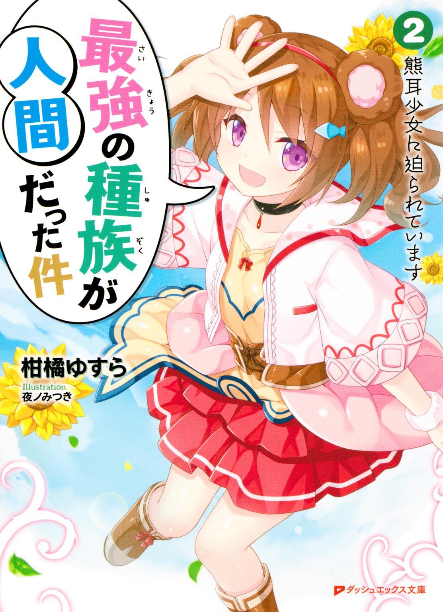
この本は縦書きでレイアウトされています。
また、ご覧になる機種により、表示の差が認められることがあります。
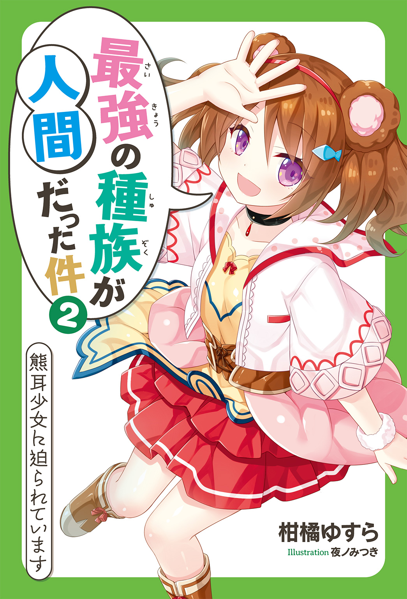
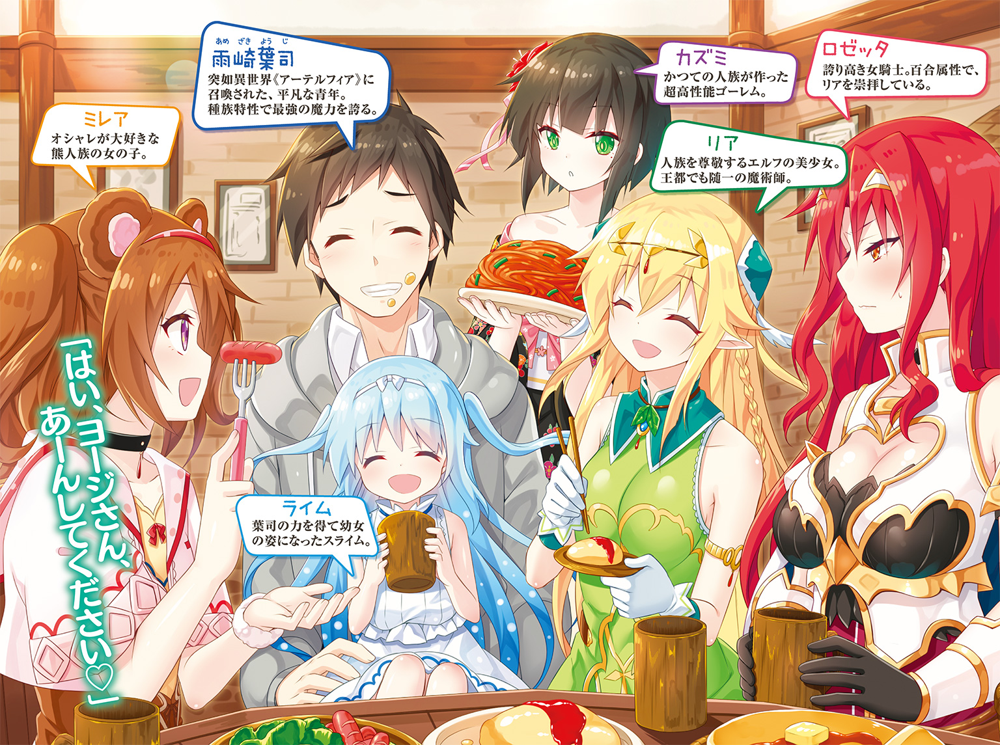
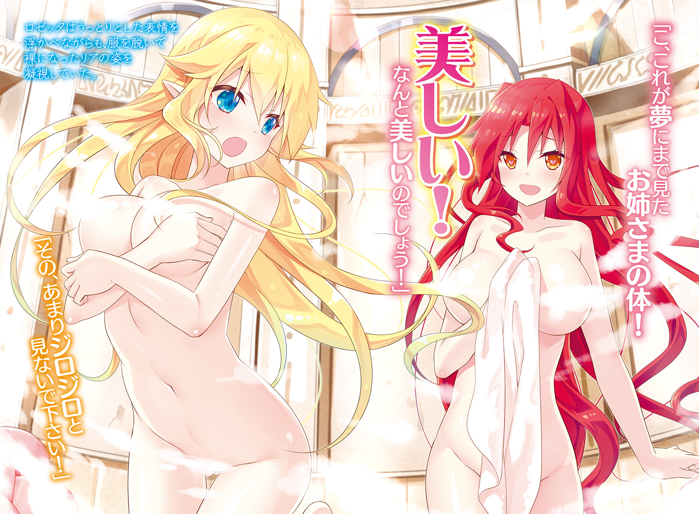
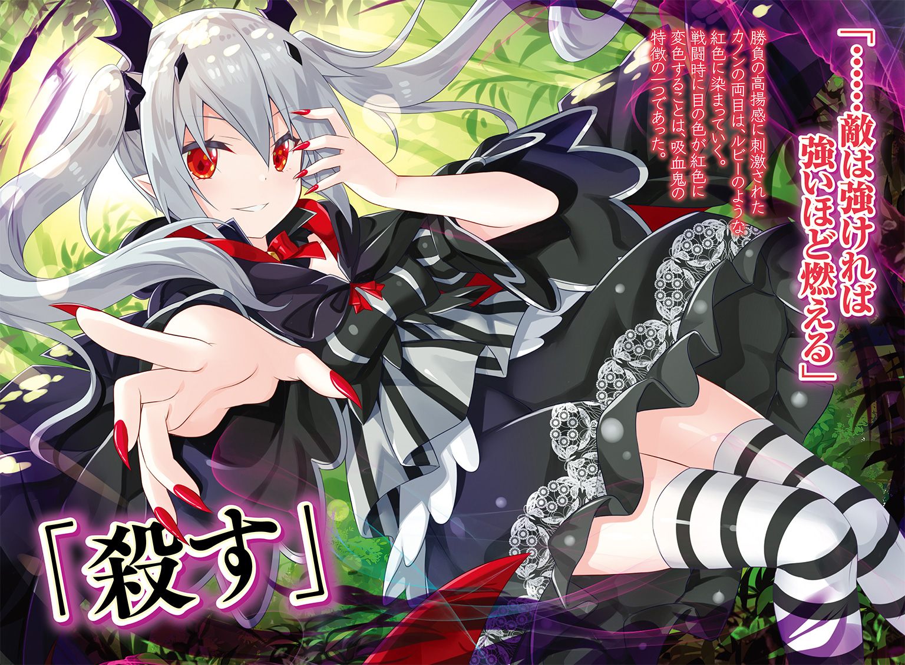
 ダッシュエックス文庫DIGITAL
ダッシュエックス文庫DIGITAL
最強の種族が人間だった件２
熊耳少女に迫られています
柑橘ゆすら

異世界に召喚されてからどれくらいの日が過ぎただろうか。
とある日の朝。
目を覚ますと、視界に入ったのは先に起きた二人の美少女であった。
「おはようございます。主さま」
「おはよう。リア」
右隣で寝ていた少女の名前はエルフ族のリア。
モデルのようにスラリと伸びた手足と凶悪な胸サイズを併せ持ったパーフェクト美少女である。
何かにつけて有能なリアには、異世界生活のサポートをしてもらっている。
「おはようございます。ヨージさん」
「おはよう。ミレアちゃん」
左隣で寝ている少女の名前は熊人族のミレアちゃん。
年齢は高校生くらいなのだが、大人びた雰囲気を感じる美少女である。
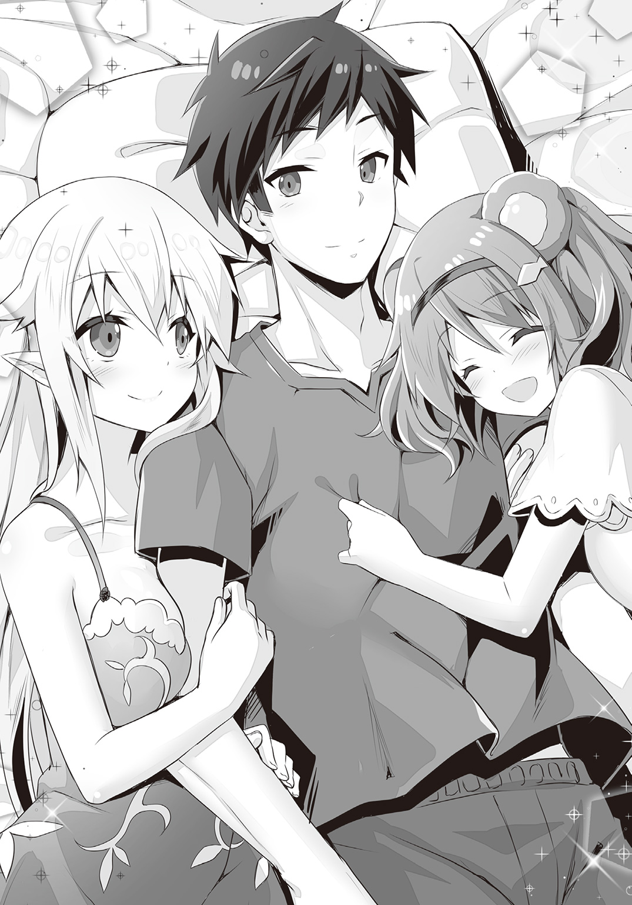
ミレアちゃんは、最近よくアジトに遊びに来るので、今日のようにそのまま泊まっていくことが多かった。
「主さま。さっそくで悪いのですが......」
「ああ。俺はいつでも構わないよ」
異世界アーテルフィアにおいては『人間』であることが最強の条件であった。
この世界の人間は、その気になれば月すらも粉微塵にしてしまうほどの絶大なパワーを有している。
人族の魔力は髪の毛の一本にまで宿っており――。
他者に分け与えることにより、パワーアップを図ることが可能らしい。
「それでは失礼します」
許可を与えるとリアは遠慮がちに俺の唇を求めてくる。
この世界の人間は神聖視される一方で、その絶大な力を悪用しようと企んでいる輩も多い。
そういうわけで俺は、身の安全を守るためにキスという手段も用いて仲間に力を分け与えている。
だからこれはエロい意味ではない。断じて。
「ヨージさん。アタシにも......！ アタシにもお願いします......！」
「分かった。次はミレアちゃんの番だな」
リアとのキスに区切りが付いたことを見計らって今度はミレアちゃんと唇を重ねる。
以上。
ここまでの出来事が異世界に召喚されてからの俺の日常である。
我ながら冷静に考えてみると、凄まじく爛れた生活をしていると思うよ。
日本に暮らしていた頃は、会社とアパートの往復で全く異性と無縁の暮らしをしていた訳だしな。
色々と怖い目にもあわされていたが、今となっては異世界に召喚されて本当に良かったと思っている。
～～～～～～～～～～
朝の日課を済ませた俺は、リアと一緒にアジトの地下に作った応接室を訪れていた。
この地下一階層は別名《温泉エリア》と呼ばれており、太古の昔に住んでいた人間が作ったものであるらしい。
「ささ。ヨージさんのために腕によりをかけて作りました！ たーんと召し上がって下さい」
「凄い......！ これを全てミレアちゃんが......？」
応接室のテーブルの上にはミレアちゃんが作った朝食が所狭しと並べられていた。
普段の朝食はリアが作ってくれるのだが今日は特別である。
いつもリアを働かせてばかりで悪いし、たまには休ませてやりたいと思っていたんだよな。
「前々から思っていたのですが、ミレアさんは本当に料理上手なのですね。私が教えて頂きたいくらいです」
「いえいえ。ウチは兄貴が全く料理とかしない人だったので自然と身についただけですよ」
謙遜しているが、素人目に見てもミレアちゃんの料理の腕が尋常でないことは理解できる。
特に盛り付けなんか本当にオシャレで、高級レストランに訪れているかのような気分になる。
「うん。美味しい。なんかこういう『女子』っていう感じの料理は久しぶりな気がするよ」
「そうですか......！ ヨージさんにそう言って頂けると作った甲斐がありました！」
俺が料理にコメントを残すと、ミレアちゃんはパァッと花が咲いたかのような笑みを浮かべる。
「......主さま。毎日不味い料理ばかり食べさせてしまい本当に申し訳ありません」
「いやいや！ リアの料理がダメって言っているわけではないからな!?」
リアが落ち込んでしまったみたいなのでフォローをしておく。
騎士団生活の長いリアの作る料理は、なんというか『サバイバル向けのワイルド料理』という感じだった。
決して腕が悪いというわけではないのだが、女子力の塊のようなミレアちゃんの料理とは色々と対照的だった。
「いいんです。どうせ私の料理は男臭いですから。主さまはミレアさんの作る可愛らしい料理が好きなんですよね」
ダ、ダメだこりゃ。
こんな感じに一度ポンコツモードに入るとなかなか戻ってこないんだよな。
「あ、そうだ。リアさん。今朝は例のアレに付き合ってもらいますよ」
暫く朝食をとっていると、ミレアちゃんはそんな意味深な発言を口にする。
「......分かりました。以前からの約束でしたからね」
ん？ リアも知っていたのか。
例のアレってなんだろう？
二人の会話を聞いた俺は首を傾げるのであった。
～～～～～～～～～～
朝食が終わった後は二度寝の時間である。
いや、自分でも怠惰な生活を送っているという自覚はあるのだが、何もすることがないのだから仕方がない。
実をいうと、リアが狩りに出かけているこの時間が一日の中で最も幸福を感じる時間だったりする。
「俺は......自由だぁぁぁぁ！」
周囲に人がいないことを見計らってベッドの中にダイブした。
ふふふ。
今日も何もすることがない。幸せ。
日本でサラリーマンをやっていた頃は考えられなかったよな。
毎日、好きな時間に好きなだけ寝ることが出来る。
これ以上の幸福は存在しないだろう。
「ヨージさん。入っても良いでしょうか？」
部屋でゴロゴロしていると、聞き覚えのある声がした。
珍しいな。
この声は......ミレアちゃんだろうか。
「ああ。大丈夫だよ」
「それでは失礼します」
許可すると、ミレアちゃんが寝室の中に入ってくる。
「今日はどうしたの？」
「はい。ヨージさんには以前にアタシの夢がファッションデザイナーであるということを話したのを覚えているでしょうか？」
「もちろん。当たり前じゃないか」
料理の腕もプロ級だが、ミレアちゃんの本命は衣装作りにある。
以前にミレアちゃんの部屋を訪れた時は本当に驚いた。
部屋の中には自作の衣装がたくさん飾ってあって......本気で夢に向かって頑張っているんだなって思わず感心してしまった。
「実を言うと来週開催される王都のバザーに出品する新作の衣装を作ってみたんです。自信作ですのでヨージさんには、一番に見てもらって感想を頂きたいなって思っていまして」
「本当に!? それは光栄だな」
ミレアちゃんの作る衣装は、店で並んでいるものと比べても遜色のないクオリティを誇っている。
だから純粋に楽しみだし、頼りにされている感じがして嬉しい。
「それではリアさん。入ってきてください」
「え？ どうしてリアが？」
「実を言うとリアさんにはモデルになってもらう約束をしていたんです。リアさんはスタイルが抜群に良いですし以前から狙っていたんですよ」
ふむふむ。
ようやく話が見えてきたぞ。
つまりは朝食の時にミレアちゃんが言った『例のアレに付き合ってもらう』っていうのは衣装モデルのことだったんだな。
「当の本人が来ないみたいだけど」
「......おかしいですね。少し様子を見て来ます」
異変に気付いたミレアちゃんは首を傾げながら寝室から退出していく。
～～～～～～～～～～
「ううぅぅっ。このような姿......主さまにはとても見せられません」
「大丈夫ですよ！ リアさんは綺麗ですし、とっても似合っていますって」
それから五分後。
待機していると、ようやくリアが顔を見せる。
メ、メイド服だと......!?
グッジョブ！
ミレアちゃん......なかなか男心を分かっているじゃないか。
丈は短い。スカートとニーソックスの間には絶対領域が発生して神々しいまでのパワーを発生させている。
邪道と蔑んでくれても構わない。
どちらかというと俺はロングよりも短い丈のスカートが好きなんだよな。
衣装の至るところにはヒラヒラとしたフリルが付いていて、いかにも女の子らしい雰囲気を感じさせるデザインとなっていた。
「きゅー！ きゅー！」
「おおー。ライムもモデルの仕事を手伝っていたのか」
リアの後ろから現れた青髪の美少女の名前はライムである。
元々ライムはスライムというモンスターだったのだが、人間パワーを取り込んでことによって美少女の姿になっていた。
「ライムちゃんには子供用のメイド服のモデルになって頂きました。ウチの村にはライムちゃんくらいの女の子がいなかったので助かりました」
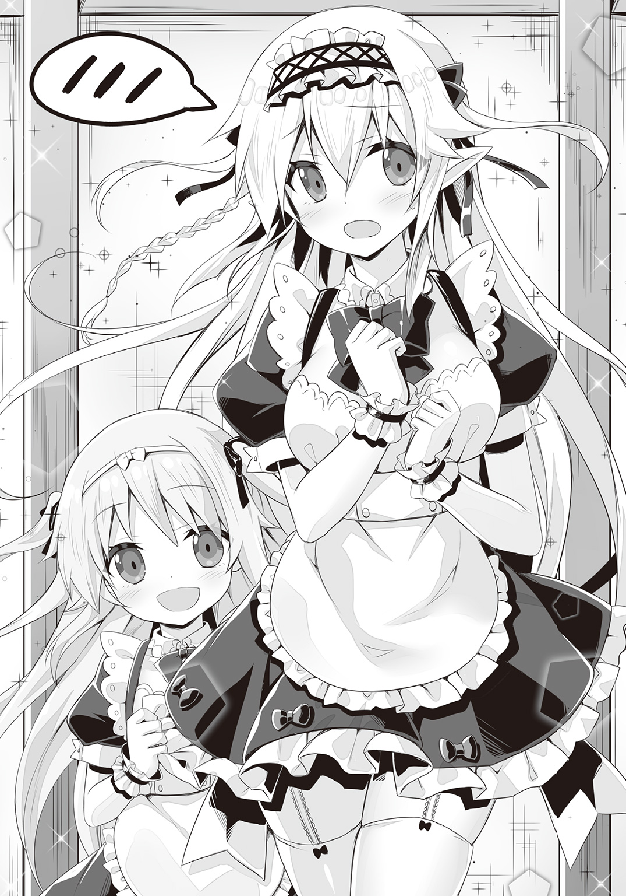
「そ、そうだったのか......」
子供用のメイドっていうのは斬新な発想だな。
この服は一体どういう層に売っていくのだろうか？
ちょっとばかし気になるが、色々と闇が深そうで触れないことにしておこう。
「私のようなものに......このような格好は似あうはずがありません......」
フリフリのメイド服に身を包んだリアは、部屋の隅っこに移動して縮こまっていた。
もしかしてリアって、こういう女の子らしい衣服を着なれていないのか？
十分に考えられる。
小さい頃から過酷な騎士団の中にいたらしいし、可愛い服とは無縁の生活を送っていたのだろう。
「いやいや。凄く似合っているし......可愛いと思うぞ？」
「か、可愛い!? もしかしてそれは私を形容する言葉として使っているのですか!?」
「当たり前だろ。他に誰がいるんだよ......」
「 っ！」
っ！」
お前はもう少し自分の容姿の凄さを自覚しても良いと思う。
リアがその気になればどんな男も即ノックアウトだろう。
「ミ、ミレアさん。このメイド服は一体いくらで売っていますか？」
「へ？ その服はバザーの見本として出す予定なので非売品ですけど......」
「金貨何枚でも積みます！ 是非とも私に売って下さい！」
「えっ？ ええええええええええ!? こんな大金！ 受け取れませんよ!?」
テーブルの上に山積みにされた金貨を前にしたミレアちゃんは、目を丸くして驚いているようであった。
これって俺がメイド服姿を褒めたことが関係しているのだろうか？
息を荒くしたリアは、ミレアちゃんとの交渉を始めるのであった。
～～～～～～～～～～
「はぁ......。極楽極楽」
夜になり俺は日課である入浴の時間を楽しんでいた。
リアのおじいさんが作ったアジトの地下が、人族の残した古代遺跡になっていることを知ったのはつい最近のことである。
何でも一万年前にこの遺跡に住んでいたキャシーという人物は、大の道楽家だったらしい。
遺跡の地下一階部分は別名《温泉エリア》と呼ばれており、水風呂、電気風呂、牛乳風呂、ジャグジー、サウナ......などなど。
様々な施設が完備されている。
「主さま。そろそろ体をお流ししましょうか？」
「ああ。よろしく頼むよ」
ちなみに俺の隣には当然のようにリアがいる。
温泉が発見された当初は時間帯によって男女で分けていたのだが、そんなルールは形骸化していた。
少し不健全な気がしないでもないのだが......。
互いにバスタオルを体に巻いているのでセーフということにしておこう。
「今日もお願いするよ」
「任せて下さい」
俺は温泉から出ると、浴場に置かれたマットの上に寝転がった。
その直後。
ふわりとバラの香りが鼻腔を刺激した。
以前に聞いた話では、何でもこのボディーソープは王都の会員制の店でしか手に入らない限定品らしい。
リアは掌の上でボディーソープを温めると俺の太ももに塗りたくっていく。
「主さま。お加減は宜しかったでしょうか？」
「ああ。ちょうどいいくらいだよ」
最初は背中を流してもらうだけだったのだが、最近は徐々に行為がエスカレートしていて全身を洗ってもらっている。
つまりは......自分で体を洗う必要がない。
マットの上で寝ているだけで勝手に体を洗ってもらえるのである。
「なぁ。リア」
「はい。なんでしょうか」
「王都ってどんなところなのかな？」
「......理由を尋ねてもよろしいでしょうか？ どうしてそのようなことを？」
「ミレアちゃんが王都のバザーに自分の作った服を売るって言っていたろ？ そこでちょっと気になってさ」
寝転がっているだけで体を洗ってもらえる現在の暮らしに不満があるというわけではないのだが......。
ズバリ言おう。
今更だけど俺の生活には少し『冒険』の要素が足りていないと思うんだよな。
せっかく異世界に召喚されたから色んな場所を見て回りたい。
「承知しました。こういうものは実際に見て頂くのが一番早いと思います。主さまが望まれるのであれば来週のバザーに参加されては如何でしょうか？」
「えっ。良いのか!?」
外部に俺の存在が知られたら、人間の力を悪用しようと考える組織に命を狙われかねない。
そういうわけで俺たちは、アジトに籠って情報を外部に漏らさないように努めている最中なのである。
「はい。主さまの望みを叶えるのが、配下である私の務めですから。この任務......必ず成功させてみせましょう！」
久しぶりに大きな仕事を与えられて張り切っているのだろうか？
リアは熱の籠った声で返事をするのであった。
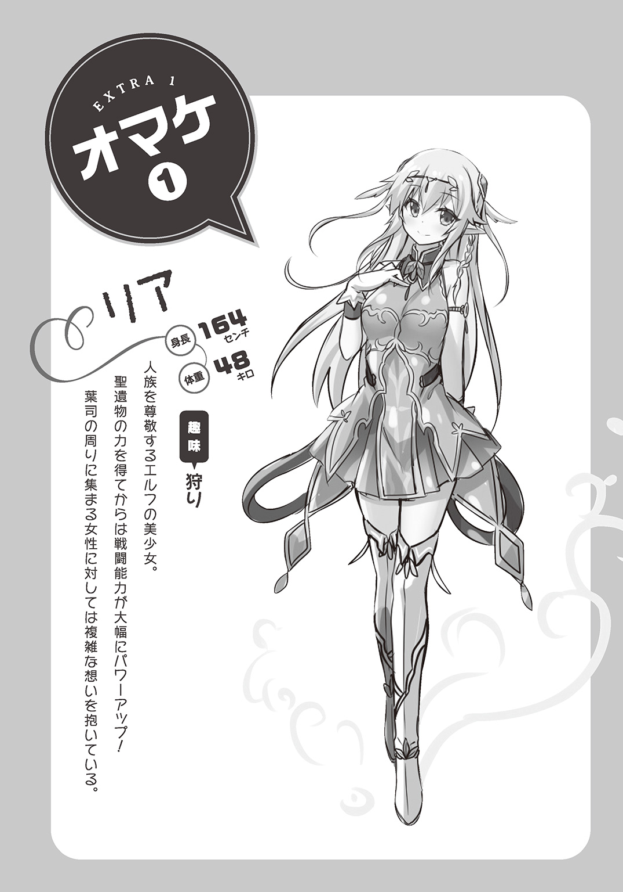
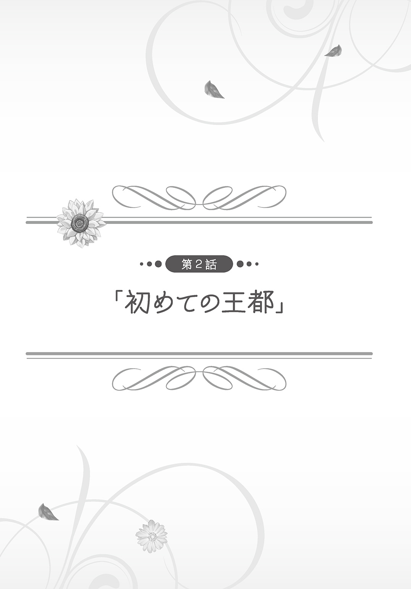
リアと約束をしていた王都視察の日がやってきた。
俺とリアはライムにアジトの留守番を任せて、森を抜けた場所にある崖の上にまで足を運んでいた。
「なぁ。本当にここで待っているだけでいいのか」
「はい。必要な手配は全て完了しています。主さまは大船に乗った気持ちでいて下さい」
リアの話では、この崖上で待機していれば、王都まで俺たちを運んでくれる乗り物が来るという。
う～ん。
リアを疑うわけではないのだけど、俺としてはイマイチ信じられないんだよな。
前方には斜面のキツイ崖があって、後方には鬱蒼と生い茂る森が立ちはだかっている。
こんな所にまで馬車が来られるわけが......。
「あ。主さま。迎えが来たみたいですよ。空の上を見て下さい」
「......ん？」
言われるがままに視線を上げた次の瞬間――。
俺は絶句した。
そうか！ 大船に乗った気持ちでいて下さいっていう言葉は比喩ではなかったのか！
ここより遥か上空。
高度五〇メートルくらいの地点に中に浮かぶ巨大な飛行船が飛来する。
「お姉さまぁぁぁぁああああ！」
げっ！ 飛行船の中から誰かが落ちてくるぞ。
よくよく見てみると、その人物は俺にとっても顔なじみの人物であった。
「ロゼ。空の上から抱き付いてくるのは止めて下さい」
「......も、申し訳ございません。しかし、私の風魔法を使えば安全です。絶対にお姉さまをケガさせることはないと断言できますわ」
「そういう問題ではないのですが......。まぁ今日は良いでしょう」
空から落ちてきた少女......ロゼッタに抱き付かれることになったリアは微妙な表情を浮かべていた。
この少女は、何を隠そう俺の協力者の一人である。
人族と外見的にウリ二つの容姿をしているニューマンという種族のロゼッタは、王都の騎士部隊に所属している。
俺たちにとってロゼッタは外部の情報を得るための貴重な存在になっていた。
「ささ。お姉さま。それにヨージ殿も。どうぞ我がオーヴェルニ家が誇る自慢の飛行船に乗って下さいまし。王都までの短い距離ですが、安心安全に空の旅を楽しめると思いますわ」
「えっ。この船ってロゼッタの所有物だったのか？」
「はい。ロゼの生まれ育ったオーヴェルニ家は、王都ミズガルドの中でも有数の大貴族なのです。もっとも......王都広しと言っても個人で飛行船を所有している貴族はロゼの家くらいのものですけどね」
「............」
知らなかった。
たしかに言動なんかにはそれっぽいところはあるが、ロゼッタって良いところのお嬢さんだったんだなぁ。
そんな彼女がどうして騎士団に入ることになったのだろうか？
なんというか......色々と込み入った事情がありそうな気がする。
「ヨージ殿。早く乗り込まないと置いて行ってしまいますよ？」
「ああ。今いくよ」
ロゼッタに急かされた俺は足早に飛行船の中に乗り込むのであった。
～～～～～～～～～～
さて。楽しみにしていた飛行船の空の旅であったが、これについては観光気分に浸る間もなく一瞬で終わってしまった。
それというのも元々、アジトから王都までの距離は三〇キロほどしかなかったからである。
オーヴェルニ家の私有地に着陸したことを確認すると、俺たちは飛行船から出ることにした。
「それではお姉さま。ヨージ殿。わたくしに出来るのはここまでです。初めての王都を楽しんで下さいね」
「分かりました。ロゼの方も仕事を頑張って下さい」
騎士団の仕事があるロゼッタとは、ここで別行動を取ることになった。
今日このタイミングのために無理やり仕事を休んできたというのだから、ロゼッタには本当に頭が上がらない。
それから。
オーヴェルニ家の私有地を抜けるとついに――。
念願の王都に到着した。
「おお......！ ここが王都か......！」
犬耳だ！ 犬耳の女の子がいる！
ぬおおおおお！ あっちにいるのはリザードマンっていうやつだろうか？
流石は人間が存在しない世界というだけのことはある。
王都の中は様々な種類の亜人たちでごった返していた。
「主さま。新しい衣服も素敵です。とても似合っていますよ」
「そ、そうかなぁ」
今現在。俺は変装目的でミレアちゃんに作ってもらった帽子を身に着けていた。
この帽子には抜け毛を防ぐための機能もついている。
何と言っても人族の魔力は膨大で、髪の毛の一本にまで潤沢すぎる魔力が宿っているらしいからな。
王都の中で迂闊に髪の毛を落とそうものなら大惨事になるかもしれない。
聞いた話によると、俺の髪の毛は魔力のオーバーフローの結果、パッと見では普通の髪と変わらないらしいのだが......。
用心するに越したことはない。
「リアの変装も似合っていると思うぞ」
「ありがとうございます。私などには勿体のないお言葉です」
本日のリアはサングラス＆帽子を身に着けて変装をしていた。
こうして見ると変装したリアの姿は、芸能人がお忍びでショッピングを楽しんでいるかのようである。
騎士団の中心人物だったリアであるが、現在は人族の残した遺跡の中で命を落としたという扱いになっているらしい。
リアに関しても正体がバレることになれば大騒ぎになってしまうだろう。
「主さま。王都での視察についてなのですが、私と一つだけ約束をして頂けないでしょうか？」
「......約束？」
「はい。我々の正体がバレることになれば、他ならない主さまに危険が及んでしまうかもしれません。ですからくれぐれも慎重な行動を心掛けて頂きたいな、と」
「大丈夫。もちろんそのつもりでいるよ」
今回の変装にしたって正体を隠す目的でしているものだしな。
リアに言われるまでもなく自分の命が大事だし、無茶な行動を取るつもりはサラサラない。
「おっ。露店で武器が売っているみたいだ」
そうこうしている内に街の大通りで気になるものを発見する。
シートの上には厨二心をくすぐられるような格好いいデザインの武器が並べられていた。
これだよ！ このファンタジーっぽい感じ！
俺はずっとこういうのを求めていたんだよ！
アジトの中でまったりしているのも良いけど、こういう冒険の世界も憧れるよな。
おっ。
これは俗にいうククリナイフっていうやつだろうか？
刀身が反り返っている感じが凄く男心をくすぐるよなー。
「......あんちゃんは冒険者かい？」
俺が熱心に剣を眺めていると露店のオッサンが顔をしかめていた。
身長が低く、やたらと毛深い。
俺の予想が正しければドワーフという種族だろう。
「いえ。そういうわけではないのですが......」
世間的には俺の職業はどういう風な扱いになっているのだろう。
ニート？ ひも？
ロクデナシ？
自分で言っていて悲しくなるが......まともな種類のものではなさそうだな。
「ふんっ。まぁ、その貧相な体付きで冒険者をやれるはずがねえもんな。お前みたいなモヤシに売る武器はねえ！ 早く帰った帰った！」
ドワーフのオヤジは俺の体を強引に押し飛ばす。
もしかして冷やかしと思われたのかな？
これは悪いことをした。
買う気もないのに長く居座っていたことが、店主の逆鱗に触れてしまったのかもしれない。
「無礼者！ その方を誰と心得ますか!?」
うおっ！ お前は一体......何をしているんだよ!?
ドワーフのオッサンが俺の体を押し飛ばしたことに激怒したのだろうか。
リアは凄まじい剣幕で店主の胸倉を摑んでいた。
「し、知らねえよ。そのモヤシが一体何者だっていうんだい!?」
「ふふふ。聞いて驚きなさい！ 主さまは、最古にして最強の種族と謳われる伝説の存在......人ぞ......」
「ははは。すいません。何者でもないです。それでは俺はこれで失礼します」
「もがぁもがぁっ！」
先程の約束は何だったのだろうか。
自ら積極的にバラしていくスタイルかよ!?
普段のリアは超が付くほど優秀なのに、俺のことになると途端にポンコツ化することがあるから困る。
怒りで冷静を失ったリアの口を塞ぎながら俺は、そそくさと露店から立ち去るのであった。
～～～～～～～～～～
「主さま。先程は本当に申し訳ございませんでした」
「いや。いいんだよ。リアは俺の名誉を守ろうとしてくれたんだよな」
それにしても本当に焦ったよ。
まさか一番身近な人物に正体をバラされそうになるとは思いもしなかった。
「ところで聞きそびれていたのですが、主さまは王都で何をしたいのですか？」
「う～ん。そうだなぁ」
実を言うとそのあたりのことは深く考えていなかった。
明日に開催されるバザーには参加したいと思っていたんだけど......。
今日のところは特に予定らしい予定は存在しない。
「とりあえずは買い物を楽しみたいかな」
だから俺は悩んだ挙句に当り障りのない言葉を返すことにした。
ひとまず街をブラブラしていたら何かやりたいことが見つかるかもしれないしな。
「承知しました。そういうことでしたらまずはこれをお納め下さい」
「ん......？ これは......？」
そこでリアが俺に手渡したのはパンパンに膨らんだ麻袋だった。
何気なく袋を開けて中を覗いてみる。
......そこには金色に輝く硬貨が詰められていた。
「も、もしかしてこれ全部......本物の金貨なのか!?」
「ええ。その通りですが、何か問題がありましたでしょうか？」
「............」
さもそれが当然と言った雰囲気でリアは告げる。
問題大アリだよ！
もしこの硬貨が全て本物の金で出来ているのだとしたら日本円に換算して時価数百万円は下らないだろう。
もしかしてリアってロゼッタと同じように良家のお嬢様の生まれなのだろうか？
こんな大金をポンと渡せる感覚が怖い！
「えーっと。色々と聞きたいことがあるんだけど......このお金は何処で？」
「そうですね。出所は色々とあるのですが、メインとなるのは熊人族の村から得た税収になります」
「税収!?」
「？ 何か不自然なことを言ったでしょうか。あの村は事実上、主さまの支配下にありますからね。村の収益の大部分は主さまが与えた『聖遺物』を活用した成果になりますし、マージンを取るのは当然のことだと存じます」
「............」
なんということだろう。
たしかにリアの言っていることは間違っていないとは思う。
しかし、喉の奥に小骨が刺さったかのような感覚である。
俺にとって『税金』っていうのは払うものであって、徴収するものではなかったんだよなー。
まさか自分が税金を取り立てる立場の人間になるとは思いもしなかった。
それから。
リアから金貨を受け取った俺は王都を満喫していた。
当然と言えば当然の話なのだが、初めての王都は俺にとって新鮮な刺激に満ちていた。
最初は街を歩く様々な亜人に目を奪われたけど、売っている食物なんかにも目を瞠るものがある。
「リア。あそこの串に刺している食物はなんだ？」
「ママダラ蝶の幼虫のステーキになりますね。見た目は少しグロテスクですが、トロリとしたクリーミーな味わいは癖になると言われています」
「あそこでクルクル回っている肉は？」
「レッサーオークのケバブになりますね。生きたオークの子供を鉄串に刺して丸焼きにするミズガルドの伝統料理です」
なるほど。
聞いているだけで食欲がなくなるような解説をありがとう！
こういうエキゾチックな屋台の食べ物って見ているだけで楽しいよな。
学生時代にアジア旅行した時とかにも同じようなことを思った。
見ていて楽しいというだけで、実際に食べてみようという気は、微塵も湧かないんだけどな......。
「主さま。私の方からも立ち寄りたい店があるのですが、少しお時間よろしいでしょうか？」
「ああ。別に構わないぞ」
気になるな。
リアが立ち寄りたい店っていうのは一体どこなんだろう。
必要な物資があればアダイやロゼッタからも取り寄せることが出来るわけだし、自分の手で買う必要はないと思うんだが......。
「こ、ここは......!?」
リアに連れられて辿り着いた店を前にして俺は絶句した。
下着店。下着店である。
知らなかったよ。
異世界にも普通に女性用の下着売場って存在していたんだなー。
日本にいた頃は横目でチラチラ見るのがやっとで堂々と入ったことはなかった。
「どうしてこの店に？ 下着なんてロゼッタに買ってもらえばよかったんじゃないか？」
「それはその......他人に下着を買ってと依頼するのは少し気恥ずかしくて」
「あー」
言われてみれば納得である。
たしかに友達に自分の下着を買ってもらうのは恥ずかしいよな。
男の俺でも恥ずかしいと思うのだから女の子なら尚更だろう。
「あの、良い機会ですので......主さまが私が身に着ける下着を選んで頂けないでしょうか？」
「俺がか!?」
「はい。ダメだったでしょうか？ お恥ずかしい話、私も騎士団生活が長かったせいかこういった店に入るのは初めてのことでして......。何を選んで良いのか分からないです」
「............」
そんなもの俺にも分からないわ！
とツッコミを入れたい気持ちに駆られるが、リアからの相談を無下に断るわけにもいかない。
「そうだなぁ。リアはスタイルが良いからこういう大人っぽいデザインのものが似合うんじゃないか？」
ここで俺が選択したのは落ち着いた色合いをした上下セットの下着だった。
元々の素材が良いから変に奇をてらわないシンプルなもので良いと思う。
「な、なるほど！ 主さまはそういった種類の下着を好まれるのですね!?」
「どうして俺!?」
「......好まれないのでしょうか？」
「いや、まぁ、好きか嫌いかで言うと好きだけど」
「分かりました。それではこの下着は『買い』ですね」
俺のコメントを確認したリアは、一切の躊躇なく下着を買い物カゴに入れる。
「それではこのお尻の部分がＴバックになっているデザインのものはどうでしょうか？ 男性の方はこういった露出度の高い下着を好まれると聞きました」
「まぁ、好きか嫌いかで言うと好きだけど」
いつもＴバックを穿いているのは嫌だけど「ここぞ！」という時のために勝負下着をタンスの奥に隠している女の子には萌えを感じる。
この辺りは好みが分かれるところだろうな。
「分かりました。『買い』ですね」
またまたリアは無造作に下着を買い物カゴに入れる。
「それではこちらの動物のキャラクターのイラストが入っている下着はどうでしょうか？ 男性の方は、こういった少女趣味の女性に魅力を感じると聞いたことがあります」
「アリかナシかでいうとアリだろうな」
アニマルプリントか。
異世界にもそんなジャンルがあったんだな。
アニマルプリントというとロリ系の女の子が穿くものというイメージがある。
しかし、リアのようなスタイルの良い女性が穿いた場合は『ギャップ萌え』という現象を引き起こす。
「了解です。『買い』ですね」
え!? もしかしてこのやり取り......ずっと続けるのか!?
さっきから俺が『良い』と言った下着を無条件に買っているだけのよう気がするのだが......。
......。
............。
結論から言うと俺の推測は正しかったらしい。
この店の買い物はリアの持っているカゴの中がパンパンになるまで続くのであった。
～～～～～～～～～～
王都での買物を楽しんだ俺は、リアに連れられて本日の宿に向かっていた。
それにしてもさっきは凄い経験をしてしまったな。
女の子と一緒に下着店に入って買い物をするなんて日本にいた頃は考えられなかった。
お土産代わりにライム用の幼女パンツを買ったので、店員さんに奇怪な眼差しを向けられてしまったよ。
「主さま。ここが本日の宿になっています」
「はい......？」
この子は一体......何を言っているのだろうか。
建物全体がピンク色で、全体にハートマークの装飾がついている。
リアが指差す方向にあったのは、どう見てもラブホとしか思えない建物だった。
いや。ここは異世界だからラブホではなくラブ宿と呼んだ方がいいのかな。
「別の宿はなかったのか？」
「申し訳ございません。王都の高級宿はどこも国の有力者たちの息がかかっているので危険と判断しました。身を隠すならばこういった世俗的なものの方が色々と都合が良いのです」
なるほど。そういった事情があるのなら仕方ない。
日本のビジネスマンだって出張の時は、安く泊まれるラブホに一人で入ることもあるって聞いたことがある。
大事なのは『どこに入るか』ではなく『どういう目的で入るか』だろう。
リアとラブ宿に泊まることには別にエロい意味はない。断じてエロい意味はないから問題ないだろう。
～～～～～～～～～～
「ぬおっ。これは凄いな......！」
宿の部屋に足を踏み入れると、俺の視界に飛び込んできたのは、全面ピンク色の空間だった。
うわっ。ハートの形をした枕って初めてみたかもしれない！
ここまでベタなラブホって前いた世界にもないんじゃないかな？
他に比較対象がないので推測になってしまうのが悲しいところである。
「......主さま」
声のした方に目を向けると、そこにいたのは服を脱いで下着姿になったリアであった。
「ど、どうして服を脱ぐんだよ......!?」
「申し訳ございません。先程買った下着を主さまに見て頂きたくて。どうでしょう。似合っているでしょうか？」
部屋の雰囲気にあてられたのだろうか？
なんというかリアは『エロいことする気満々』という感じの表情をしていた。
そんなもの、似合っているに決まっている！
こういうのランジェリーっていうのかな？
たくさんの装飾が付いた下着は、唯でさえ綺麗なリアの肢体をより美しく見せているように思えた。
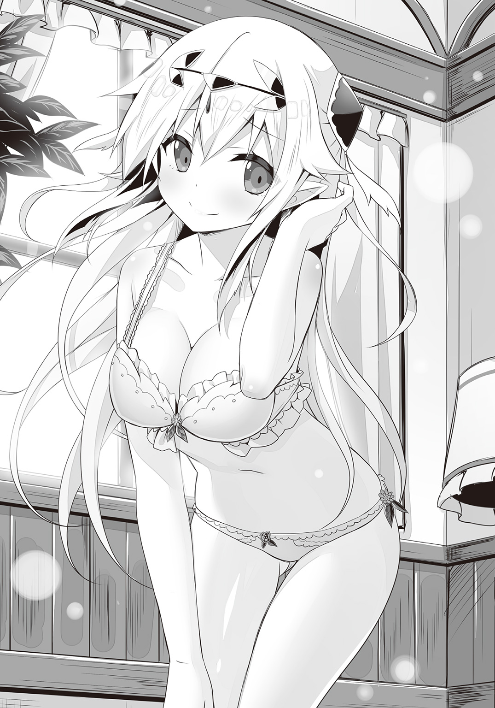
「リアが悪いんだぞ。俺は我慢しようとしたんだからな」
「......あっ」
流石にここまで挑発されて受け流せるほど俺の性欲は枯れてはいない。
俺が勢いよく体を抱きしめるとリアは甘い吐息を漏らす。
「嬉しいです。ようやくその気になって頂けたのですね」
もしかすると......今日のことって全てリアの計画通りだったのかな。
一緒に下着店に行ったことから宿のセレクトまで偶然にしては出来過ぎていると思う。
「まずは私の方からご奉仕致します。主さまはそこで楽にしていて下さい」
リアは俺の衣服を一枚一枚、丁寧に脱がしていく。
ここまで来たら流石の俺も腹を括ったぞ。
後は野となれ山となれ。
欲望の赴くまま行動することにしよう。
長かった。ようやく二〇年以上守り続けてきた童貞を捨てる日が来たんだなぁ。
リアに服を脱がされながら俺は感慨深い想いに浸るのだった。
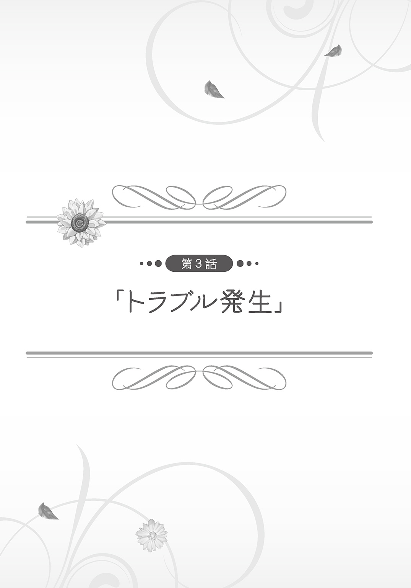
チュンチュンチュン。
リアと一緒にラブ宿に泊まってから夜が明けた。
気分転換のために窓を開けると、外の方から小鳥がさえずっているのが聞こえてきた。
「えーっと......。どうしてこうなった......」
結論から言おう。
俺は童貞を卒業できなかった。
おそらく精液っていうのは、人族の『聖遺物』の中でも最も魔力が濃い部分なのだろうな。
その効果は普段与えている唾液の百倍近くあるのではないかと思う。
人族の『聖遺物』には強力な催淫作用があることで知られている。
そういうわけで昨夜は一線を越える前に、リアが失神してしまったというわけである。
「申し訳ありません。私の方から誘っておいて......自分が不甲斐ないです」
行為が終わる前に体力の底が尽きてしまったリアは、激しく落ち込んでいるようであった。
「大丈夫。残念だけど、次の機会にお願いするよ」
今回のことでハッキリと今後の課題が見えてきた。
俺が童貞を卒業するためには、毎日リアにキスをして強力な魔力に対する耐性を付けてもらうしかないらしい。
「さっそくで悪いのですが、朝の日課を行っても構いませんか？ 一日でも早く夜の務めを果たせるように力を付けていきたいのです」
「分かった」
許可を与えるとリアは情熱的に俺の唇を求めてくる。
なんてことはない。
悲願である童貞卒業を果たせなかったのは残念だが、少し前戯が長くなってしまったと考えることにしよう。
～～～～～～～～～～
王都生活二日目。
俺とリアは当初から計画していたミレアちゃんのバザーに参加していた。
「うわっ。凄い人ゴミだな......」
バザーが開かれている王都の西通りは既に大勢の人たちでごった返していた。
中には徹夜で並んでいたのか、防寒具を持参している人もいた。
この地獄絵図......まるでコミケのようである。
「妙ですね。このエリアにいる人たちのほとんどが綺麗に一列に並んでいるように見えます」
「つまりは一つだけぶっちぎり超人気の店があるということか」
周囲を見渡すと『ＢＥＯＲの最後尾はこちら』というプラカードを持った女性の姿を発見する。
ＢＥＯＲ？
そこはかとなく熊っぽいブランド名だなぁ。
なんて考えながら前を歩いていると、見知った人物と遭遇する。
「ヨ、ヨージさん!? 来てくれたんですか!?」
これは一体どういうことだ......!?
列の先の方で露店を構えていたのは、ミレアちゃんであった。
～～～～～～～～～～
「驚いたよ。バザーで出した服が人気あるっていう話は聞いていたけど、ここまでのものだったんだな」
「いえいえ。私なんか大したことありませんよ！ 私のサークルよりも人気のある所なんて幾らでもありますし！」
どうやら王都のバザーは俺が思っていた以上に大規模なものであったらしい。
頻度は一年に二回。
開催時には全国から腕利きの服職人が集まるのだという。
「このバザーで結果を残すことがデザイナーとして就職するための登竜門なんです！」
ふむふむ。つまりプロアマ集う戦場の中で勝ち抜くことで商業の仕事が回ってくるというわけか。
どこの業界も構造は変わらないものなんだな。
「私が持っているものと同じメイド服が売られているのですね」
「はい。先日は仕事を手伝って頂いてありがとうございます。おかげさまでリアさんモデルのメイド服は飛ぶように売れていますよ！」
若い女の子たちがメイド服を求めて列を作る様子はなかなか新鮮なものがある。
日本にいた頃の感覚だとメイド服なんて単なるコスプレ衣装っていう感覚だったんだけど異世界では違うんだろうな。
「ライムモデルのメイド服も売っているんだな」
「いや～。でもこっちはノリで作っただけのものなので流石に売れ行きは良くないですね」
「そうなのか？」
「はい。少し悪乗りが過ぎました。いくらなんでも子供にメイド服を着せたがる人は少なかったみたいです」
なるほど。それを聞いて少し安心したよ。
これで子供用のメイド服が飛ぶように売れちまったら色々とこの世界が心配になってくるところだった。
「おい庶民。ここに置いてある幼女用のメイド服を全て持ってこい」
なんて思っていたら......さっそく売れた!?
声のした方に視線を向ける。
と、そこにいたのはハゲ頭のオッサンだった。
女性客が中心のバザー参加者の中では、かなり浮いた存在となっている感じがある。
「あの......お客様。他のお客様の迷惑になりますので横入りは止めて頂けないでしょうか」
このオッサン......横入りしていたのか。
サークルの売り子さんは場違いなオッサンを前にして困惑気味の表情を浮かべていた。
「貴様！ そのお方を誰と心得る!? このミズガルドで侯爵の地位を授かったサイバネ様であらせられるぞ！」
オッサンの付き人（？）は売り子の女の子を叱りつけるように怒声を飛ばす。
「リア。知っているのか？」
「ええ。サイバネ＝レッズスターと言うと、王都では悪名高い貴族です。噂によると庶民の女性を奴隷として強引に家に連れ込み暴行を働いているそうです。なまじ権力があるばかりに性質が悪く、目を付けられた女性は泣き寝入りするしかありません」
もしかしてこの状況はかなりマズイのでは？
このオッサンの機嫌を損ねてしまうと最悪の結末を引き起こしかねない。
ここは余計なトラブルが起こらないように無難にやり過ごすしかないだろう。
「ほほう。よく見ると、そこの熊人族の娘はなかなかの美人じゃのう」
「いやっ。離して下さい！」
「ククク。気に入った。そこの熊人族の女は今日からワシが奴隷として飼ってやることにする」
前言撤回！ 大人しく用事を済ませて帰るなら黙っていようと思っていたのだが......。
よりにもよってミレアちゃんの腕を乱暴に摑みやがって！
「主さま。ここは私が引き受けます」
「......大丈夫なのか？」
「はい。この程度の相手......主さまが出るまでもないでしょう」
友達を侮辱されたことに対して思うところがあるのだろうか？
怒っているリアは久しぶりに見たような気がする。
「そこの男、手を離しなさい」
「なんじゃ。貴様は......？」
「リ、リアさん!?」
静かに怒りを滾らせたリアはゴミを払うようにしてオッサンの手をどける。
「身の程を知れっ！ この痴れ者が！」
オッサンの反撃。
オッサンは手にした剣を抜いてリアに向かって斬り付ける。
が、その攻撃はリアを相手取るには遅すぎた。
リアは素早く身を屈めて攻撃を回避する。
その直後。
リアが頭に被っていたフードが風を孕んでフワリと捲れあがる。
「き、貴様はリア......!? 鬼将リアではないか!?」
これはまずい。
このオッサン......リアのこと知っているのかよ!?
「リア？ リアってあの......史上最年少で騎士団の部隊長まで上り詰めた伝説の!?」
「噓っ!? 私ずっとリア様のファンだったのよ！」
どうやらリアの知名度は俺が予想していた以上のものらしい。
オッサンがリアの名前を出した次の瞬間。
周囲にいたギャラリーたちは一様にしてザワめき始める。
「グッ......。しかし、騎士団員と言っても所詮は庶民の子よ。侯爵であるワシの敵ではないわ！ 今すぐにそこにいる無礼なエルフをひっ捕らえよ！」
「「「「ハッ......！」」」」
オッサンは啖呵を切ると、部下である男たちを突撃させる。
その数四人。
大の男が剣を抜きながら女性を囲んでいる姿は見ていて痛々しいものがあった。
「死ねええええええええええええ！」
男の一人は叫びながらリアに向かって大剣を振り下ろす。
その直後。
信じられないことが起こった。
「この程度ですか。主さまから頂いた力を使うまでもありませんね」
つまらなそうに呟いたリアの両足は男が手にした大剣の上に載っていた。
重力をものともしないような軽やかな身のこなしを目の当たりにして、周囲にいたギャラリーは一瞬で静まり返ってしまう。
「悪くは思わないで下さいね。貴方たちは仕えるべき主を間違えました」
「......ふごっ!?」
そこから先は勝負と言うにはあまりに一方的な展開だった。
リアは得意の足技で部下である男たちを一人......また一人と撃退する。
「い、今すぐに地面に足を付けてワシの前にひれ伏せ！ さすれば許してやらんこともない！」
錯乱したオッサンは恐怖で声帯を震わせながら命令を下す。
一方のリアはそんなことはお構いなしにジリジリと歩みを進めていた。
「い、いいのか？ 侯爵であるワシに逆らうということは王都を......この世界を敵に回すということなのじゃぞ!?」
「問題ありません。元より主さまについていくと決めた時点で覚悟していたことですから」
「ひぃっ」
リアが殺気を放つとオッサンは情けなくも地面に腰を落としてしまう。
「ワシは騎士団長のカズール殿とも懇意にしておる！ ワシに暴力を振るおうものなら騎士団での貴様の席は......」
「黙りなさい」
「ぶふぉっ！」
会心の一撃。
リアの蹴りを顔面に受けたオッサンは白目を剝いて気絶してしまう。
「凄い！ これが鬼将リアの実力かっ！」
「あのサイバネを一瞬で!? スカッとしたぜっ！」
サイバネっていうのは酷く庶民たちから恨みを買っていたんだな。
一連の出来事を目撃していたギャラリーは、割れんばかりの拍手を送るのであった。
～～～～～～～～～～
それから、更に翌日のこと。
王都の観光を終わらせた俺は、ロゼッタの家が保有する飛行船に乗ってアジトを目指していた。
「ふぅ。色々とあったけど楽しかったなぁ」
アジトの中でまったりしているのも好きだが、外の世界に出て知らない文化に触れるのも違った趣がある。
ここまで新鮮な体験は二〇年以上生きていて初めてのことである。
「そういえば昨日は用事があるって言って夜に出て行ったみたいだけど、アレは何だったんだ？」
「ああ。それはサイバネと話し合いに行っていたのですよ」
「えっ。大丈夫だったのか!?」
「特に問題ありません。変にこちらに恨みを持たれても困りますからね。これでサイバネが我々に危害を加える可能性はなくなったと思われます」
「それを聞いて安心したよ」
流石はリア！ 仕事が早い！
いつものことながらこの根回しの早さには本当に驚かされる。
「それにしても良かったのか？」
「......？ なんのことでしょうか？」
「いや、さ。バザーでのことだよ。今回のことでリアが生きているってことが周囲にバレちまっただろ？ だからさ、本来なら直ぐにでも騎士団に戻らないとリアの帰る場所がなくなっちまうんじゃないかって」
生きているのに騎士団側に何も報告をしないというのはまずいよな。
昨日のことでリアが騎士団に復帰するのは絶望的になってしまったに違いない。
「問題ありません。私の帰る場所はいつだって主さまのいるところですから」
尋ねるとリアは屈託のない笑みを浮かべる。
ああ！ やっぱりリアは可愛いなぁ。
こんなに美人で綺麗なのに甲斐甲斐しく俺に尽くしてくれる辺りが最高である。
リアと一緒にいられるだけで異世界に召喚された甲斐があったと思うよ。
「あの......主さま。折り入って一つ相談したいことがあるのですが」
「どうしたよ急に」
「不遜なことは承知の上なのですが......なんだか無性に主さまとキスしたくなってしまって......」
頰に朱を散らしながらリアはモジモジと指を絡ませる。
ぐはっ。なんという破壊力！
上目遣いにキスをねだるリアの魅力は当社比一二〇パーセント増しである。
「そんなことか。お安い御用だよ」
「はうっ......」
俺が唇を重ねると、リアは口から甘い吐息を漏らす。
アジトに着くまで残り三〇分もないくらいだろうか？
他に乗客もいないみたいだし、ここは時間ギリギリまでイチャイチャさせてもらうことにしよう。
「お二人とも。わたくしの見ている前で破廉恥な行為はしないで頂けませんこと？」
俺たちのやり取りを見て我慢できなくなったのだろうか？
飛行船の中でも離れて座っているはずのロゼッタは、拡声器を使って俺たちに警告を飛ばすのであった。
～～～～～～～～～～
時は葉司たちが王都を離れる半日ほど前に遡る。
ここは王都ミズガルドの中でも最大クラスの敷地面積を誇る、レッズスター家の屋敷の中である。
（あの女......絶対に許さぬぞ！ ワシのことをコケにしおって......！）
バザーで気絶した後、家敷に運び込まれることになったサイバネは憤っていた。
気分良く奴隷に着せる衣服選びを楽しんでいたところまでは良かったのだが、リアたちに出会ってしまったのが運の尽き――。
顔面に鋭い蹴りを入れられたサイバネの足取りは、今もフラフラと覚束ないものであった。
「この恨み......あのエルフを犯して血祭りに上げるまで収まらん！」
騎士団長のカズールにこの件を報告してリアを失脚させることは簡単である。
しかし、それだけでは怒りは収まらない。
サイバネはリア打倒のために兵力を結集して自身の手で私刑を加えようと考えていた。
「まだか！ まだワシの兵は集まらぬのか！」
ミズガルドに住んでいる貴族の中でもトップクラスの財力を誇るサイバネは、総勢一〇〇名を越える私兵を保有していた。
彼らはサイバネが購入した別荘に生活の拠点を置いて日夜訓練に励んでいる。
「ただいま報告が入りました。そ、それが......大変申し上げにくいのですが......。先程、侵入者があったようです。別荘の兵舎の中にいる者たちは全滅......。それぞれ重傷を負い、暫くは戦闘できる状態ではないみたいです」
「な、なんじゃとっ!?」
「......侵入者の正体は摑めませんでしたが、相手は複数属性の上級魔法を使いこなしていたようです。おそらく鬼将リアの犯行と思われます」
この国に複数属性の上級魔法を使えるほどの魔術師というと片手の指で数えられるほどしかいない。
タイミングから言ってもリアの犯行であることは疑う余地のないことであった。
「クソッ。あの女......どれだけワシをコケにすれば気が済むのじゃ......！」
金。女。地位。権力。
生まれた時から欲しいものは全て手に入れてきたサイバネにとってリアの存在は絶対に許せないものであった。
「おやおや。お困りのようですね」
突如として部屋の中に不気味な声が鳴り響く。
「......何者だっ!?」
サイバネが振り返ると、そこにいたのは全身黒のローブを身にまとった人影があった。
不気味な仮面を身に着けた男は、他の誰に気付かれることもなくサイバネの前に現れたのであった。
「私の名前はグレイス。しがない魔族ですよ」
「ま、魔族じゃと!?」
アーテルフィアにおいて魔族とは謎に満ちた存在であった。
他種族たちとは常に一定の距離を取り、表に出ようとしない。
ただ一つハッキリ分かっていることは、魔族が他種族に対して友好的な感情を抱いていないということだけである。
「者ども！ 何をしている！ ワシの屋敷に魔族を上げるでない！」
「「「......ハッ！」」」
サイバネの命を受けた屋敷の警備兵は、侵入者を取り押さえるべくグレイスと名乗る魔族の元に向かう。
「カノン。仕事ですよ」
突如としてサイバネの隣に一人の少女が出現する。
身長一四〇センチほどの小柄な少女はフードと一緒に漆黒のマントを身に着けていた。
「ん。任された」
カノンと名乗る少女は短く呟くと、警備兵の元に向かってトボトボと歩く。
「な、なんだこのガキ......！」
「構うことはねぇ。やっちまえっ！」
男たちは年端のいかない少女を前にして戸惑うも、やがて、意を決して剣を振り下ろす。
だがしかし。
男の振るった剣が少女に当たる直前、少女の体は消失した。
「「なっ」」
動きが速いという次元の話ではない。
警備兵の目からは少女が『消えた』ようにしか見えなかった。
「今度はこっちの番」
カノンが宣言した直後。
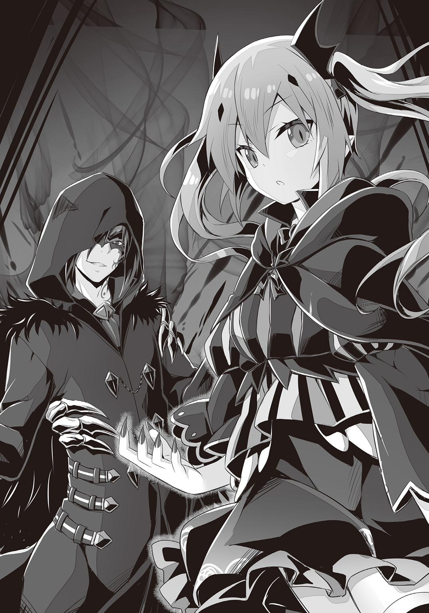
男の体は宙に浮いて屋敷の壁に激突することになる。
「......ガハッ！」
自分が何をされたかすら分からない。
壁に飛ばされた男は何一つとして反撃の機会を得られないまま意識を失うことになった。
「止めた方がいい。彼女は吸血鬼です。これ以上の戦いは余計な血を流すだけですよ」
「バカな......！ 吸血鬼じゃと......!?」
魔族たちの中でも卓越した身体能力を有する吸血鬼は、現在アーテルフィアに存在する種族の中でも『最強種』として名を知られていた。
その理不尽なまでの強さは、他種族たちから『最も人間に近い種族』と称されるほどである。
「貴様たちの目的は何だ......!?」
「そう警戒しないで下さい。私たちは貴方の復讐の手伝いに来たのですよ」
「バカなことを！ 貴様のようなものが信用できるはずがないだろう！」
古今東西、魔族の力を借りて大成したものはいない。
彼らは程度の差はあっても最終的には破滅の道を辿っていったのである。
「鈍い人ですね。最初から貴方に断る権利など存在しないのですよ」
「な、なんじゃ......。それは......!?」
そこでグレイスが取り出したのは透明のビンの中に入れられた錠剤だった。
この錠剤は人族の聖遺物の力にも似た効果を有しており――。
一粒飲めば服用者に悪質な中毒を引き起こすことで知られていた。
グレイスはビンの中の錠剤を掌の上に置くと、無理やりそれをサイバネの口の中に押し込んだ。
「......もがぁっ」
最初は抵抗を見せていたサイバネであったが、やがて、薬の魔力に抗うことが出来ずにトロンと呆けた表情になっていた。
（ふふふふ。待っていて下さい。アメザキ・ヨージ）
グレイスたち魔族は人族の力を研究していた。
何故ならば――。
かつて地上にいた人族を絶滅に追いやったとされる古代兵器『ラグナロク』は、同じ人族にしか扱えないものだからである。
魔族たちはこの『ラグナロク』を自在に操ることで、他種族たちを蹂躙して、この世界を支配しようと計画していたのであった。
（今度こそ貴方たち人族の秘密を暴いて差し上げますよ）
まさか人族の生き残りがいるとは思わなかった。
葉司の身柄を確保することが出来れば千年はかかると言われていた魔族たちの研究をたったの一月に短縮することすら可能である。
作戦の成功を確信したグレイスはうっすらと笑みを浮かべるのであった。
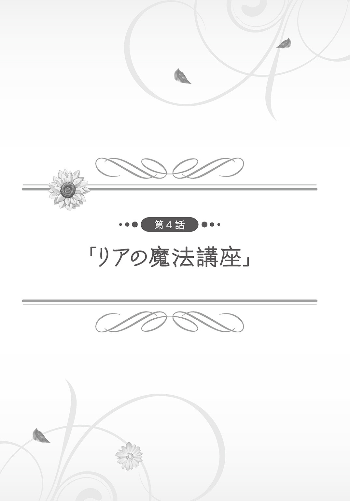
王都からアジトに戻って数日が流れた。
俺はというと何一つ変わらない日常を謳歌している。
「主さま。本日の朝食はいかがでしょうか？」
「もちろん美味しいよ。盛り付けも前よりオシャレになっている気がするな」
「......ありがとうございます。私もいつまでも騎士団時代のレシピではまずいと思ってミレアさんの料理を参考にしたのですよ」
「............」
前々から思っていたのだがリアの対応力の凄さには本当に驚かされる。
何か欠点を見つけてもすぐに改善していく力を持っているので、文句をつけるところが一つも見当たらない。
「ん。どうかしたのか？」
「いえ。大したことではないのですが......アダイから受け取ったジャムのフタが固くて開かないのです」
リアはそう言いながら力を入れて一生懸命にビンのフタを開けようとしていた。
ハハッ。
なんだかんだでリアも女の子なんだなぁ。
騎士団の元エースで万能超人であるリアの意外な一面を見たような気がした。
「どれどれ。俺が開けるから貸してくれよ」
「......申し訳ございません。それではお願い出来るでしょうか？」
「............」
んん？ おかしいな。
このビン......マジで開かないぞ!?
アダイのやつ......不良品を送り付けたんじゃないだろうな。
「ふんぬっ！」
俺が本腰を入れて全力でビンのフタを回そうとした直後であった。
バリバリッ！
ベリベリベリベリッ！
ジャムの容器が粉々に割れて突如として光の粒子と化した。
こ、これは一体どういうことだ？
コンクリートに思い切り叩き付けたとしても、ジャムの容器がこんな砕け方をするとは思えない。
「主さま!? お、お怪我はございませんか!? 待っていてください。すぐにタオルを用意......」
「なぁ。リア。その前に一つだけ聞いておきたいことがあるんだけど良いかな？」
「......えっと。はい。何でも仰って下さい」
そこで俺の脳裏に過ったのは――先日の猫人族のデクスという男との死闘の光景である。
あの時もピンチに追い込まれた俺の身体能力が急に上がってデクスの巨体を天高くに投げ飛ばすことに成功したのである。
「もしかして俺って......強いのかな？」
「......はい？」
信じられないものを見ているかのように大きく眼を見開いたまま硬直していた。
「......何処まで本気で尋ねているのでしょうか？」
「全て本気だけど。ここで言う『強い』っていうのは総合的な戦闘能力のことだよ」
「もちろんです！ この世界で唯一の人族である主さまは言うまでもなくこの世界で最強の存在です！ 主さまに敵うものなどいるはずがございません！」
「強いっていうとリアよりもか？」
「私など一万人束になったところで主さまの足元にも及びませんよ」
「............」
とても謙遜で言っているようには思えない。
う～ん。
なんというか元の世界での貧弱だった頃の自分のイメージが残っていて、未だに『自分が強い』っていう実感が湧かないんだよな。
「申し訳ございません。まさか主さまがご自身の力を把握していなかったとは......予想外です」
「いやいや。リアのせいじゃないよ。強いって言われてもどの程度なのか......いまいち実感できないんだよなぁ」
「......分かりました。それでは主さまの強さがどれほどのものか理解していただくために......今日はテストを行いましょうか」
「......テスト？」
「ええ。よろしければ今すぐ私と一緒に外に出てみませんか？ 今後のことを考えますと、ご自身の強さを理解しておくことは重要だと思います」
たしかに自分の身の安全を確保するためには、自分の力を正確に把握しておく必要があるだろう。
こうして俺は食事を切り上げてリアと一緒に外の森に出ることにした。
～～～～～～～～～～
「この辺りで良いでしょうか」
リアに連れられて辿りついた先はアジトの森を抜けたところにある岩場であった。
「えーっと。テストって言っていたけど具体的に俺は何をすればいいんだ？」
「はい。主さまには今から拳でこのエリアにある岩石を砕いてもらおうと考えています」
「......はぁ!?」
この子は一体何を言っているのだろう。
俺の周囲にある岩は小さいものでも一メートル近くある。
ビンのフタを開けるのとは訳が違う。
ゲームの世界とは違うんだ。
岩を素手で破壊するのは武術を極めた達人であろうと不可能だろう。
「ご安心を。身体強化魔法を使えば造作もないことです」
「身体強化魔法？」
「......申し訳ございません。今回のことは明らかに私の不始末です。主さまは『魔力』の存在しない世界で生活をしていた身です。ご自身の『強さ』に気付かないのも当然のことでした」
リアはそこで身体強化魔法の説明をしてくれた。
身体強化魔法とはその名の通り、魔力で肉体を強化する魔法のことを言う。
程度の差はあるが、この身体強化魔法はこの世界の住人ならば子供でも扱えるものらしい。
「身体強化の魔法には大きく分けて二種類あります。一つは自発的に肉体を強化する魔法。もう一つは窮地に陥った時に本能的に肉体が強化されるパターンです」
「......ああ。さっきのジャムのビンを壊しちまったのは後者の方を勝手に発動しちまったというわけなのか？」
「その通りです。後者のパターンを取得するのに特別な訓練が必要ありません。息を吸うのと同じように生まれながらにして誰しもが取得してますから」
なるほど。
その説明を聞いて色々と納得がいったよ。
この世界に召喚されてからの俺は、ピンチの時に信じられないようなパワーを発揮することがあった。
今にして考えると、あれは都合良く奇跡を起こしていたわけではなく身体強化魔法が発動していたのだろう。
「今回は前者の身体強化魔法を取得しましょう。大切なのはイメージです。今から見せるように集中力を研ぎ澄ませて『岩を壊したい』と強く願えば良いのです」
リアはそう言うと全長一メートルを越える岩の前に立って思い切り殴りつけてみせた。
するとどうだろう。
ドガガガガンッ！ と。
リアの拳によって凄まじい音を立てながら岩が破壊されることになった。
「......ス、スゲー」
思わず感嘆の声を漏らさずにはいられない。
これが意識的に行う身体強化魔術か。
意識していないと使用できないから、今まで俺は自分の力に気付くことが出来なかったんだな。
「お分かり頂けたでしょうか？ それでは今度は主さまの番です」
女の子のリアが一メートルを越える岩を砕いたのに俺が小さいものを選ぶのは格好悪い。
そこで俺がチョイスしたのは自分の身長よりも遥かに大きい――二メートル級の岩であった。
「これくらいの岩でも壊せるかな？」
「......冗談ですよね？」
「ごめん。ウソ。調子に乗った！ 流石にこんなに大きい岩は無理だよねー。アハハハ」
クソッ。異世界に召喚されてから完全に感覚がマヒしているな。
常識的に考えれば分かる。
いくら人間パワーが凄くても自分の体よりも大きい岩なんて壊せるわけがないよな。
「あ。いえ。そういう意味で言ったわけではありません。この岩ですと主さまの力を試すには不適切です。主さまでしたら向こうにある一番大きな岩すらも簡単に砕くことが出来ると思いますよ」
「......冗談だよね？」
そこでリアが指さした方向にあったのは岩というより......ちょっとした山であった。
その全長は二〇メートルくらいあるだろうか。
あの岩を壊すのはバトルインフレが進んだ少年漫画の主人公ですら難しい気がする。
「大丈夫です。主さまなら絶対にできます。命に懸けても私が保証いたします」
「............」
女の子にここまで言われて今更小さな岩を選ぶわけにはいかない。そう考えた俺は、リアの言葉を信じて岩山の前に立つことにした。
改めて見ると、やはり大きい。
近くで立つと大きすぎて正確なサイズがまるで分からない程である。
けれども。
今更怖気づいていても仕方がない。
失敗すれば間違いなく拳が血まみれになるだろうが、その時はリアの回復魔法で治してもらえばよいだろう。
「どりゃぁぁぁああああ！」
覚悟を決めた俺は力を込めて岩山を殴る。
するとどうだろう。
ドガァァァァァアアアアアアアアアアアアアアアアアアアアアアアアアアアアアアアン！ と。
巨大な岩山は粉々に砕けて空高くに破片が飛び散ることになる。
ウゲエエエエエエエエ！
なんだよこれ！ ドッキリとかじゃないよな!?
人間パワー......恐るべし。
本当に一撃で岩山を破壊しちまったよ。
「あっ......」
そこで俺は大変なことに気付く。
砕けた破片が落ちた先に誰かがいたら大変だこれ......。
「なぁ。リア」
「はい。なんでしょうか」
「空高くに岩が飛んでいっちゃったんだけど大丈夫かな？ たしか向こうって王都があった場所だと思うんだけど」
「............」
尋ねるとリアは暫く何かを考えるような仕草を取った後。
「問題ありません。たしかに今回の一件で王都は壊滅的な被害を受ける可能性がありますが......そこに主さまの責任は一切ありませんから。脆過ぎる岩が悪いのです！」
「............」
リアの言うことにも一理ある。
俺が悪いんじゃない。
脆過ぎる岩山が悪いのである！
この事態に関してはあまり深入りすると、精神を病みそうになるので俺は思考を停止させることにしよう。
なんというか......スゲー今更な感じがするのだが。
今日この日、俺は人族として召喚された自身の強さを初めて理解することになるのであった。
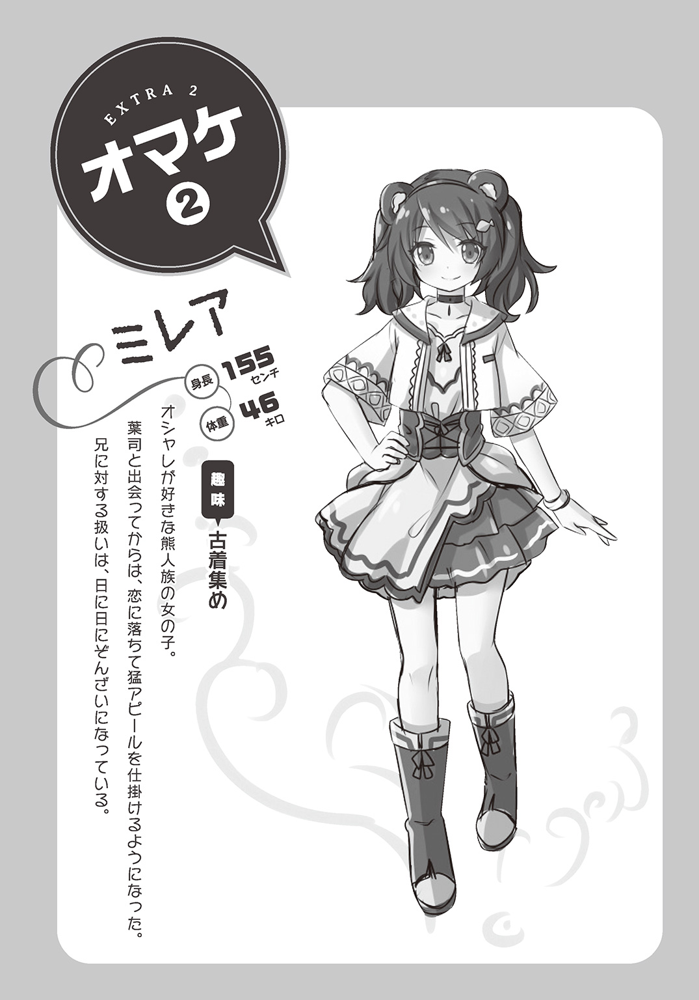
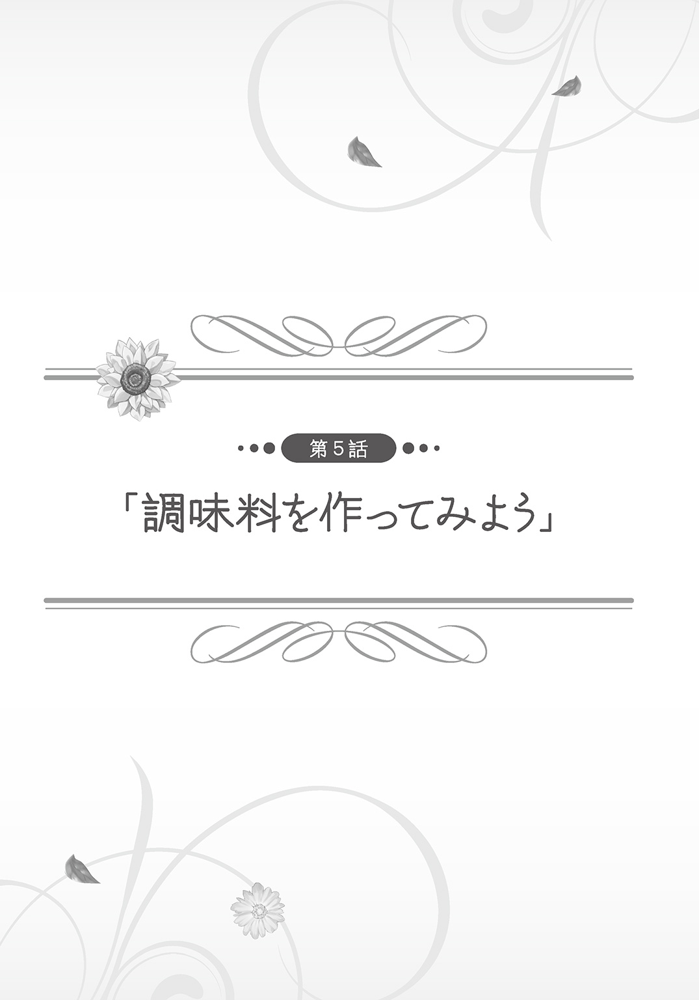
魔法の検証作業が終わりアジトに戻った俺は、することがないので部屋の中で昼寝タイムに勤しんでいた。
最近の俺の生活はいつもこんな感じである。
一日の平均睡眠時間は九時間くらい。
よく食べて、よく眠り、仲間たちと談笑する充実した日々が続いている。
ちなみに今後はそこに『魔法の訓練』という時間割を加えようと思っている。
リアの話によると、俺の持っている魔力量は膨大過ぎて完璧にコントロールできるようになるまでには暫く時間がかかるらしい。
ただでさえ今まで魔力が存在しない世界で生活していたので、余計に時間がかかるそうだ。
俺がパワーアップするためには毎日よく食べよく眠り、ちょっとずつ肉体に魔力を馴染ませていくしかないのだとか。
つまりは昼寝も訓練のうちというわけである。
さぁ。今日も沢山眠るぞ！
俺の意識が次第に心地の良い微睡の中に落ちようとした直後だった。
「いやっ。きゃあああああああああああああああああああああ！」
何処からともなく女性の声が聞こえてきた。
この声は......もしかすると!?
寝惚け眼を擦りながら慌てて地上を目指して階段を上げる。
と、そこにいたのは案の定、紅髪の女騎士――ロゼッタであった。
「無礼もの！ 何を見ているのです!?」
なんだろう。
このデジャブ......。スライムたちに揉みくちゃにされたロゼッタの姿は、非常に扇情的なものがあった。
「いや。なんというか本当すまん。ロゼッタが一人でアジトに来ることって珍しいからスライムたちに『侵入者』として認識されちまったんだと思う」
「うっ。うぅぅぅぅ......。そ、それは分かりましたから！ 早く服を！ 服を返して下さいまし！」
衣服は奪われ、下着姿になった少女は、歯ぎしりをしながら恥辱に耐えているようであった。
屋敷を警備しているスライムの子供たちには『侵入者は見つけ次第、無力化すること』という命令を与えている。
どうやらスライムたちの頭の中では、『無力化』することが『衣服を剝ぎ取ること』に変換されてしまうらしい。
「分かった。今すぐ返すよ。ところでロゼッタはウチに何の用があったんだ？」
「......用という程のものではないのですけど。お父さまが東の島国で珍しい調味料を手に入れましたので、お姉さまにもお裾分けをしたいと思いまして」
「調味料？」
「ヨージ殿。わたくしの服のポケットを確認して下さいませんか？」
「これか」
ロゼッタの服の中から出たのは黒色の液体が詰められたビンであった。
おおおおおおお！
もしかしてこれは......醬油なのではないだろうか？
凄い！ 異世界にも醬油ってあったんだ！
アジトでの食事は『塩味』が基本だったので、『醬油味』のものが恋しくなっていたんだよな。
「......主さま。ここで一体何をしているのですか？」
背後から黒色の情念が宿った声が聞こえた。
振り返ってみると、刃物を持ったヤンデレ美少女のように生気のない眼差しをしたリアがそこにいた。
「「あっ......」」
これはまずい。
リアの目の前にいるのは、スライムに襲われて揉みくちゃになたロゼッタ＆女性用の服を持った俺！
色々と誤解を与える要素が盛り沢山である。
「酷いです！ スライムでヌルヌルプレイなど......私でもして頂けたことがないのに！」
俺とロゼッタが二人でイチャイチャしているのが、そんなにショックだったのだろうか？
目に涙を浮かべたリアは膝から崩れ落ちるのであった。
～～～～～～～～～～
それから。
リアの誤解を解いた後、成り行きでロゼッタと一緒に昼食をとることになった。
元の世界で言うところのホイコーローみたいな感じだろうか？
本日のメニューは熊人族の村で採れた野菜とレッサーオークの炒め物である。
「お姉さまの手料理を頂けるとは......わたくしは果報者ですわ!?」
「今日の料理もめちゃくちゃ美味しそうだな」
リアの手料理を食べられるということでロゼッタは興奮した面持ちであった。
今回の料理にテンションを上げているのはロゼッタだけではない。
何を隠そう今回の炒め物には、ロゼッタが持ってきた調味料が入っているらしい。
醬油。
それは俺たち日本人にとって特別な意味を持った調味料である。
これを取り上げられたら全国にある日本料理店は割とマジで破産すると思う。
「「......頂きますっ！」」
「どうぞ。召し上がって下さい」
二本の箸を使って大皿に盛られた炒め物を口に運ぶ。
あれ......。なんだろう？
何か思っていた味と随分と違うぞ。
なんだか生臭いというか......馴染みのない味である。
「ヨージ殿！ もっと美味しそうに食べることはできないのですか!?」
俺が顔をしかめていることが不満だったのか、ロゼッタは怒声を飛ばす。
「なぁ。ロゼッタ。今日持ってきてくれた調味料なんだが......あれって醬油じゃなかったのか？」
「ショウユ、とは一体なんですの？ あれはナンプラーという東国の伝統調味料ですわ」
「ナン......プラー......!?」
色が黒いから完全に勘違いしていた。
ナンプラーというのは日本で言うところの魚醬である。
詳しい作り方は分からないが、大量の魚と塩を付け込んで作るという話を聞いたことがある。
めちゃくちゃ不味いというわけではないのだが、俺としては少し苦手な味だった。
「リアも醬油を知らないのか？」
「はい。聞いたことがありません。そういった種類の調味料があるのでしょうか？」
う～ん。
リアが知らないとなると、やはりこの世界には醬油は浸透していないと考えた方が良さそうだ。
原材料の大豆なんて熊人族の村ではたくさん作っているのになぁ......。
「......ん。待てよ」
醬油が存在しないなら俺の手で作っちまえばいいんじゃないか......？
そうだよ！
逆にこれはチャンスだった！
ここで俺が醬油の開発に成功したらリアも喜んでくれるに違いない。
名付けて！ 異世界に醬油を普及して無双する大作戦！
こんな感じのシーンが昔読んだファンタジー小説にも書かれていたような気がする。
せっかく異世界に召喚されたんだ。
部屋の中で寝ているのも悪くはないが、少しは俺も物語の中の主人公気分を味わっておかないとな。
よっしゃ。
そうと決まればさっそく今日から実験してみることにしよう。
～～～～～～～～～～
それから。
異世界に醬油を普及させる計画を立案した俺は熊人族の村を訪れていた。
「おお！ ヨウジさま！ ヨウジさまじゃねーか！」
快く俺のことを歓迎してくれた男の名前はアダイ。
身長一八〇センチを越えるミレアちゃんの兄にあたる人物である。
「ヨウジさまが一人でウチの村に来るとは珍しいな。リアさんは一緒じゃないのか？」
「リアなら玄関の前で待機してもらっているよ」
醬油作りの件は秘密裏で行うつもりなので本当は俺一人で来たかったのだが......。
人族の影響度を考えるとそういう訳にもいかない。
道端に落ちた抜け毛が原因で森の生態系が破壊されたりすることも十分にあり得るからな。
「今日はアダイと二人で男の相談があってだな」
「......なるほど。何やら深い事情がありそうだな」
別にそこまで込み入った相談というわけでもないのだが......。
面倒だしここはスルーしておくことにしよう。
「この村で大豆を作っているだろ？ 俺に少し分けてくれないか？」
「大豆？ もちろんヨウジさまの頼みならば何トン渡しても構わねえが......それで一体何をしようっていうんだ？」
「ふふふ。聞いて驚け。これから俺は誰も口にしたことのない最強の調味料を作るんだ！」
「......大豆で調味料？ たしかにソイツは聞いたことがねーな」
アダイが驚くのも無理がない。
俺だって幼い頃に醬油が豆から出来ているって聞いた時は、空いた口が塞がらなかったよ。
味噌とか豆腐に関しても同様である。
そもそもにして全く原形をとどめてないもんな。
「分かった。他ならないヨウジさまの頼みだ！ 倉庫にある大豆を好きなだけ持って行ってくれ！」
やはり異世界に来ても、持つべき者は友である。
アダイは気持ちの良い笑顔を浮かべて快諾してくれた。
～～～～～～～～～～
アジトに戻った俺はさっそく醬油作りに取り掛かることにした。
水・大豆・塩。
醬油作りに必要な材料と言ったらこの三つくらいのものだろう。
後はアダイから使っていないタルを貸してもらったので、準備としては完璧である。
「......さて」
材料が揃ったのは良いが、ここからどうやって醬油が出来るのだろうか？
冷静になって考えてみると、全くイメージが湧かなかった。
そもそも醬油ってどうして黒く変色しているのだろう？
いやいや。
弱気になってはダメだ！
材料はあるんだから後は手探りで色々と試してみるしかないだろう。
「とりあえずこれでチャレンジだ！」
ひとまず俺はタルの中に水・塩・大豆を無造作に入れていく。
う～ん。どう見ても塩水に浸した大豆にしか見えないのだが......。
本当にここから醬油が作れるのだろうか？
まあ、やることはやったわけだし......。
後は良い感じに化学反応が起きることを期待するしかないだろう。
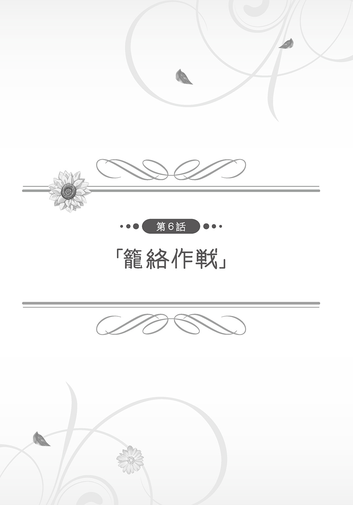
醬油作りの下準備を完了（？）させた俺が、アジトのソファの上でライムと戯れている時だった。
「主さま。そろそろ例の時間ですよ」
「お。もうそんな時間か」
「なんですの？ その例の時間というのは......」
いそいそと部屋を出る準備をしているとロゼッタは怪訝な表情を浮かべる。
「入浴のことですよ。毎日この時間帯は私が主さまのお背中を流しているのです」
「は、はいいいいいいいいいいいいい!?」
リアの発言を受けたロゼッタは、あんぐりと口を開けたまま硬直していた。
「ヨージ殿！ それはどういうことですの!?」
「......いや。どうって聞かれても」
「もしや貴方、お姉さまを慰みものにしているわけではないでしょうね!? もしそうなら......わたくしは絶対に貴方を許しませんわ！」
「ロゼ。落ち着いて下さい。私はただ主さまのお背中を流しているだけです。それ以上の行為は誓ってしていません」
「............」
リアの言葉は事実である。
今のところ俺たちの関係は（かなり危ないこともあったが）ギリギリ健全のラインを維持している。
「そこまで仰るのでしたらわたくしも一緒に入ってよろしいですよね？ ヨージ殿が不埒な真似をしないよう監視させて頂きますわ」
「......はい？」
「何ですの？ もしかすると出来ないと仰りますの？ 本当に後ろめたいことがないのでしたら私が一緒に入っても問題ないはずですわ！」
「............」
まさか......まさかまさかロゼッタと一緒にお風呂に入る機会が巡ってくるとは思わなかった。
一度あの見事な胸は見てみたいとは思っていたんだよな。
「俺は構わないけど......リアは問題ないか？」
「ええ。私からは特に反対する理由がありません」
今夜のハーレムが決定した瞬間であった。
それにしてもロゼッタはどうして急に俺たちと一緒に入浴する気になったのだろうか。
たった一日だけ監視をしてもロゼッタにとっては根本的な解決策になっていないような気がするのだが......。
「ふふふふ。これでお姉さまの裸が......裸が見られますわ」
疑問に思っていると、ロゼッタがゴニョゴニョと独り言を呟いているのが聞こえてきた。
なるほど。
考えていることは一緒なんだな。
つまりロゼッタの中の優先順位としては 俺に裸を見られる恥ずかしさ ＜ リアの裸を見られる喜び だったというわけか。
下心を剝き出しにして頰を緩ませるロゼッタを目にした俺は、不思議な親近感を覚えるのであった。
～～～～～～～～～～
「な、なんですの？ この施設は!?」
アジトの脱衣所についたロゼッタは開口一番、驚きの声を上げていた。
「これほどの入浴場が存在していたとは......。この施設に比べれば王家の入浴場など道に出来た水たまりにも等しいですわ」
流石に『水たまり』という表現は酷い気がするが......。
気持ちはまあ、分からないでもない。
元いた世界の規模で喩えるのなら個人でスーパー銭湯を保有しているようなものだからな。
「ロゼ。ぼんやりしている暇はありませんよ。私たちの役目は主さまのお背中を流すことになるのですからね」
リアはロゼッタに注意を促しつつも手慣れた感じで服を脱いでいく。
パチンと下着のホックを外すとプルンとしたお椀型の乳が露わになる。
「こ、これが夢にまで見たお姉さまの体！ 美しい！ なんと美しいのでしょう！」
ロゼッタはうっとりとした表情を浮かべながらも、服を脱いで裸になったリアの姿を凝視していた。
「その、あまりジロジロと見ないで下さい。いくら同性とはいっても他人に裸を見られるのは恥ずかしいですから」
「何を仰いますか!? お姉さまの体に恥ずべきところなどありません！」
「っ！」
ロゼッタに迫られたリアは、しどろもどろになっていた。
裸を見られて恥じらうリアも可愛いなぁ。
「ささ。わたくしも服を脱ぎますのでっ！ どうかその美しい肢体をわたくしにもっと見せて下さいまし！」
リアが服を脱いだ後はロゼッタのターンである。
んんん？
ちょっと待て！
いくらなんでもこれは......でかすぎないか？
たぶんだけどロゼッタの身に着けている下着には胸を小さく見せる効果があるんだろうな。
直で目の当たりにするロゼッタの胸のサイズは、俺の想像を遥かに超えるものであった。
リアの胸も相当でかいと思うのだが、ボリュームという一点に関してはロゼッタに遠く及んでいない感じがある。
「ヨージ殿。あまりわたくしの体をジロジロ見ないで下さいまし」
俺の視線に気付いたロゼッタはバスタオルで体を隠してしまう。
その様子は普段の男勝りな態度から一転。
何処かしょんぼりとした雰囲気だった。
「......わたくしの大きい胸など見ても楽しくないでしょうに」
バスタオルで胸を隠しながらロゼッタは言う。
そうか......！
以前にリアが言っていたっけな。
この世界では『小さく慎ましやかな胸こそが美の象徴』だと。
リアですら自分の胸が大きすぎることに悩んでいたのだから、ロゼッタのコンプレックスは相当なものだったに違いない。
「ロゼ。心配は無用です。主さまは大きな胸を好まれる『巨乳派』ですから」
「き、巨乳派!? 初めて聞いた言葉ですわ！」
リアの言葉を聞いたロゼッタは目を丸くして驚いているようであった。
なんだろう。
俺の元いた世界では『巨乳派』って別に変わった性癖ではなかったんだけどな......。
不当に変態扱いされているようで釈然としない。
「......クッ。言われてみるとたしかにヨージ殿の視線からは下心のようなもの感じましたわ！」
顔を赤くしたロゼッタは俺の視線から逃げるようにプイと後ろを向いてしまう。
「あまりジロジロ見ないで下さいまし！ 心底、不愉快です！」
どちらにせよ台詞は変わらないんだな......。
クソッ！
自分はリアの体をジロジロ見ていた癖に不公平だろ！
理不尽な扱いを受けた俺は声を大にして男女平等を叫びたい気分になるのだった。
～～～～～～～～～～
それから。
俺はロゼッタと一緒に入浴を楽しんだ。
ロゼッタを誘ったのは正解だった。
新しい湯に浸かる度に新鮮なリアクションを見せてくれるのが楽しいし、スタイル抜群のロゼッタは近くにいるだけで目の保養になる。
強いて不満を上げるなら予想以上にロゼッタのガードが堅く、裸を見る機会が全く訪れる気配がないということだろうか。
「このワイン風呂というアイデアは素晴らしいですわ！ ワインの中に入るとは......なんと斬新な発想なのでしょう！ 本当に人族の作り出した文化には驚かされます......！」
中でもロゼッタが気に入ったのは葡萄の香りがするワイン風呂らしい。
ロゼッタは掌で掬ったワインの湯を鼻に近づけながら恍惚とした表情を浮かべていた。
「ヨージ殿。ところで一つ折り入って相談したいことがあるのですが」
「ああ。何でも言ってくれ」
「この浴場にある残り湯ですが、わたくしに譲って頂くことは可能でしょうか？」
「ん。別に構わないが......。残り湯なんて何に使うんだ？」
「とぼけないで下さいまし。この湯にはヨージ殿の体から漏れ出した潤沢な魔力が含まれています。この湯さえあれば、市場に出回っているどんなポーションにも劣らない最高の治癒薬を作ることが可能ですわ！」
言われてみれば心当たりがある。
以前にもライムが風呂の残りを飲み過ぎて動けなくなっちまったっけ。
残り湯ですら薬になっちまうとは......。
この世界の人間パワー恐るべしである。
「そういうことならいくらでも好きなだけ持って行ってくれて構わないよ」
「助かりますわ！ それでは商談に入りたいのですが......。残り湯一リットルあたり金貨二〇〇枚あたりで手を打って頂けないでしょうか？」
「いや。全部タダでいいよ。仲間から金を取るわけにはいかないからな」
「そ、そういうわけにはいきませんわ！ これほどの品です！ 正直に申し上げますと、金貨二〇〇枚という価格もヨージ殿の厚意に甘えた見積もりですもの」
「本当に大丈夫だから。今日はロゼッタには良いものをたくさん見せてもらったわけだしな」
原価が無料なのでいくら渡しても損した感じがしない。
残り湯を渡しただけで、ここまで感謝されるならむしろ得した気分である。
「よ、良いもの......？」
これだけスタイルが良いのに本当に自覚がないんだな。
自分の体を褒められていることに気付いていないロゼッタは不思議そうに首を傾げていた。
「さっきも言っただろ。どちらかというと俺は巨乳派なんだ」
「っ！」
胸を褒められるのには慣れていないのだろう。
俺が補足の説明を入れると、ロゼッタは顔を赤くして視線を伏せていた。
「うっ。うぅぅ......！ そういうことなら遠慮はしませんわ！ たしかにヨージ殿は再三注意したにも拘わらず......わたくしの胸をチラチラ見ていましたからね」
交渉成立。
残り湯で巨乳美少女の胸を合法的に見ることが出来たのだから安すぎる買い物だろう。
「......主さまは少々ロゼに甘すぎるような気がします」
俺の聞き違いだろうか？
リアが冷たい声音で何事か呟いたような気がした。
～～～～～～～～～～
入浴の後は就寝の時間である。
今日はもう遅いし外を出歩くのは危険なので、ロゼッタはアジトに泊まっていくことになった。
「主さま。折り入って相談したいことがあります」
先に寝床で横になっていると、部屋に入ってきたリアが真剣な口調で切り出した。
「ん。どうしたよ急に」
「はい。主さまが気にされていないようでしたので黙っていたのですが......。最近のロゼの主さまに対する態度には、目に余るものがあります」
「............」
冗談で言っているようには思えない。
リアは本気でロゼッタの砕けた態度を問題視しているような感じだった。
「でもそれは仕方のないことなんじゃないか？ ロゼッタが忠誠を誓ったのは、俺ではなくてリアなんだから」
「もちろんそれは存じています。しかし、後々、規模が大きくなると部隊の士気に関わる問題に発展しかねません」
「......そうか」
つまりはリアはこう言いたいわけだな。
今はまだ身内だけの小規模な組織だから問題が発生しない。
けれども。
今後組織が成長した時に部下たちの忠誠心が育っていないと、内部崩壊のリスクが発生してしまうと。
元々、ここは人間である俺を中心に集まったグループなので、長たる俺が舐められるのはたしかに良くない傾向であるとも言える。
「でもどうしたらいいんだ？ リアが口で言っても聞いてくれなかったんだろ？」
「私に考えがございます。どうかこの件は私に預けて頂けないでしょうか」
何か良い解決策を閃いたのだろうか？
俺の問いかけに対してリアは自信あり気な表情を浮かべるのであった。
～～～～～～～～～～
すっかり日が落ちた深夜。
俺はリアに呼び出されてロゼッタに貸している客室を訪れていた。
「ロゼにはこの部屋で待機してもらっています。これから暫く主さまは私の言葉通りに行動して頂ければと思います」
「分かった。リアの言う通りに動けばいいんだな」
詳しい作戦の内容は聞いていないのだが、リアが考えたものだし成功率に関しては信頼できる。
「それでは扉を開けます。気配を悟られてしまうと作戦の成否にかかわりますので、何があっても大きな声は出さないで頂けないでしょうか」
「了解」
俺の返事を聞くと、リアはゆっくりと客室の扉を開く。
部屋の中からアロマを焚いたかのような甘い匂いが漂ってきた。
「ッ！」
あ、危ねぇ！
思わず声が出ちまうところだったぞ!?
えーっと。
ＳＭプレイでもしていたのかな？
俺の視界に入ったのは、下着姿のまま両手両足で椅子の上に縛られ、アイマスクを着けているロゼッタの姿であった。
「お、お姉さま......！」
扉の開く音に反応してロゼは声を上げる。
「お姉さまは意地悪ですわ......！ わたくしはもう......これ以上は我慢できません......！ 早く、一刻でも早く......わたくしのこの火照った体を慰めて下さいましっ！」
「......ええ。心配しなくても今からたっぷりと可愛がってあげますよ」
うわっ。なんて悪い顔をしているんだ!?
今まで知らなかったリアの一面を見れたような気がするな。
「主さま。今からロゼとキスをして下さい」
「............!?」
あ、危ない!?
またもや大きな声を出しちまうところだった。
「......この状況でか？ 絶対にヤバイだろ」
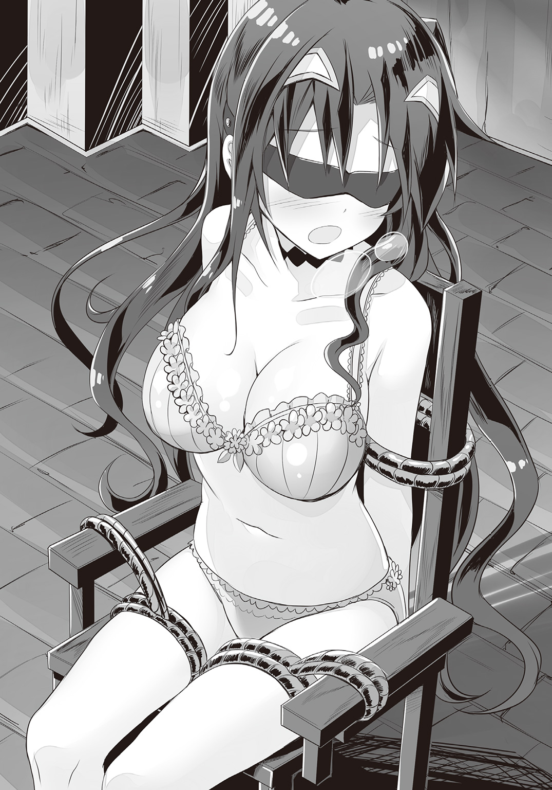
「......後のことは全て私が責任を取ります。ロゼを主さまに屈服させるには、この方法しかないのです」
クソッ！ 状況はよく分からないが、リアのことだから何か考えがあって言っているのであろう。
部下を信じるのも上司の務め！
覚悟を決めた俺は椅子の上に縛られているロゼッタに顔を近づけていく。
「ありがとうございますっ！ ありがとうございますっ！」
顔を近づけるとロゼッタは、感謝の言葉を繰り返しながら俺の唇を求めてくる。
知らなかった！
ロゼッタってこんな情熱的なキスをする奴だったのかよ!?
積極的に舌を絡ませてくるロゼッタのキスは、有り体に言って滅茶苦茶エロかった。
「お姉さまの口の中......美味しいです！ どんどん体が熱くなっていくのが分かりますわ！」
「............!?」
そうか！ リアは最初からこのつもりだったのか！
アロマを焚いていたのは、匂いによって俺の存在を特定させないためなのだろう。
目隠しをしたロゼッタは完全に俺のことをリアと勘違いしているようであった。
「お姉さま！ もっと！ もっとわたくしを愛して下さいまし！」
な、なんだこのプレイ......!?
背徳的にも程がある！
強いていうなら『百合寝取り』とでも言うべきだろうか？
ロゼッタはリアのことが好きで、健気にも目の前にいる俺をリアだと思い込んでいる。
冷静になって考えれば俺の存在に気付いてもおかしくないのだが......。
憧れのリアとキスできるというシチュエーションに興奮したロゼッタは、冷静な思考を失っているようであった。
唾液同士が交わる淫靡な音が部屋の中に響き渡る。
人族の『聖遺物』に含まれる催淫作用が効いてきたのだろうか？
ロゼの顔は紅潮し、だらしなく緩んだ表情からは、快楽の海に溺れていることが窺えた。
「さて。そろそろ頃合でしょうかね」
一連の様子を見ていたリアは俺たちの傍に歩みより――。
勢いよくロゼッタのアイマスクを引きはがした。
「えっ。えっ......!?」
突如としてアイマスクを剝がされたロゼッタは混乱しているようだった。
そりゃそうだ。
夢中になっていたキスの相手が憧れのリアではなく俺だったんだもんな。
そのショックは筆舌に尽くしがたいものがあるのだろう。
「お姉さま！ 酷いです！ 何故このような仕打ちを!?」
ジワリと目に涙を浮かべながらロゼッタは叫ぶ。
ヤバイ。
今更ながらに罪悪感が湧いてきたぞ。
女の子を泣かしてしまったのは小学生の低学年の時以来かもしれない。
「ロゼ。これは他ならない貴女のためでもあるのです」
「わたくしのため......？」
「はい。主さまに仕えている状況下でいつまでも私に依存していてはいけません。貴女は私から卒業しなければいけない時がきたのです」
「............」
う～ん。これはリアなりの愛の鞭というやつなのだろうか？
たしかに強引なやり方ではあるが、ロゼッタの依存を解消するという意味では、有効な手段だったのかもしれない。
「認めなさい。貴女が心奪われていた相手は主さまです！ 私ではありません！ 貴女が唇を求めていた相手は主さまです！」
いつになく真剣な口調でリアは詰め寄る。
「嫌ですわっ！ わたくしが愛しているのはお姉さまだけです！」
しかし、ロゼッタも負けてはいない。
縄で手足を縛られながら必死の抵抗を見せていた。
「ああ。これは試練。お姉さまがわたくしの愛を試しているのですね......！ ご安心下さい。わたくしには全ては分かっておりますから！」
「......主さま。ロゼにもう一度キスをして頂けないでしょうか？ 彼女を屈服させるには口で何か言っても無駄だったようです」
「......いや。それは出来ないかな」
「主さま!?」
俺はリアの提案に断りを入れると、ロゼッタの近くに歩み寄る。
「ヨ、ヨージ殿？ 一体何を......？」
そのまま縄による拘束を解除してやると、ロゼッタはキョトンとした表情を浮かべていた。
「......悪いけど俺はこんなことまでしてロゼッタから敬って欲しいとは思えないんだ。誰を好きになるかはロゼッタに決める自由があると思う」
リアの採った手段はロゼッタの依存を解消するという意味では良かったが、流石にやり過ぎだと思う。
酷い仕打ちを受けてもリアのことを慕い続けるロゼッタの気持ちは尊重してやりたい。
「ヨージ殿。こちらを向いて下さいまし」
ロゼッタの声に釣られて振り返る。
――と、信じられないことが起こった。
「ロゼッタ......。これは......？」
何を思ったか、ロゼッタは自らの意思でキスをしてきたのである。
「これからはわたくしのことは『ロゼ』でいいですわ。親しい方からはそう呼んでもらうことにしていますので」
「え。でもそれって......？」
そこで俺は過去の記憶を引っ張り出す。
以前にロゼと呼んだ時は、『わたくしのことを愛称で呼んでよいのは世界でただ一人！ お姉さまだけです！』と怒られたことがあった。
「わたくしは勘違いしていましたわ。わたくしにとって男の方というのは......粗野で乱暴で下半身でしか物事を考えられない最低の存在でした。しかし、どうやらヨージ殿は違ったようです。どうやらわたくしは......貴方に対する認識を改めなければならないようです」
過程は違ってしまったが結果オーライということだろうか？
今回のことでロゼッタの中の俺の好感度はアップしたらしい。
言われた通りこれからはロゼと呼ぼう。
「なあ。リア。一つ提案があるんだけど」
「何でしょうか」
「ロゼもこう言っていることだし......これからは三人で仲良くしないか？ 俺は二人が仲良くしているのを見るのが好きなんだ」
「それは名案ですわ！ お姉さま！ これから愛し合う時は三人一緒です！ 三人でキスを重ねれば幸せも二倍になるはずです！」
「............」
俺の提案を受けたリアは一瞬、頭を悩ませるような素振りを見せたが、やがてゆっくりと首を縦に振る。
「分かりました。主さまがそう仰るのでしたら」
良かった。
正妻ポジション（？）であるリアが許してくれるならロゼのアイデアを叶えることができる。
「そ、それではヨージ殿。先程のキスの続きをして頂けませんこと？ 実を言うとわたくし......先程からずっと我慢をしていまして......」
聖遺物に含まれる催淫作用が効いているのだろうか？
キスをねだるロゼはモジモジと腿のあたりを動かしていた。
「ロゼ。ズルイですよ！ 貴女は先程から何度も主さまとキスしているではありませんか!?」
「ふふ。それでは二人同時にキスをしましょうか。わたくしたちを同時に相手できるなんてヨージ殿は贅沢すぎますわ」
付き合いの長さに由来しているのだろうか？
二人のコンビネーションプレイは完璧だった。
それから。
俺たちの夜の営みは二人の女の子の体力が尽きるまで続くことになる。
この日以来――。
ロゼの俺に対する態度が心なしか、ちょっとだけ和らいだような気がした。
色々な意味で激しかった夜が過ぎて朝になった。
ロゼはというと今日からまた仕事が始まるということで王都に戻ることになった。
それにしても昨日は凄まじい経験をしてしまったな。
今更言うまでもなくリア＆ロゼは、スタイルもルックスも一〇〇点満点の美少女である。
そんな女の子たちから同時に献身的な奉仕をしてもらえるなんて......男冥利に尽きるものがある。
「......さて」
いつまでも思い出に浸っていても仕方ない。
ふふふ。
夜も明けたことだし昨日の醬油作りの成果を確認することにしよう。
何を隠そう俺は、アジトの中に『水』・『塩』・『大豆』を入れたタルを隠していたのである。
期待で胸を躍らせながら蓋を開けてみる。
「な、なんじゃこりゃー!?」
俺の視界に入ったのは、塩水に浸かってフニャフニャになった大豆であった。
清々しいくらいに何も科学反応が起こっていない。
俺としてはもっとこう......大豆に含まれる旨味成分が塩水に溶け込んで黒色に変わるみたいな展開を予想していたのだが......。
現実はそう甘いものではなかった。
「マスター。それは一体なんでしょうか？」
俺が途方に暮れていると、和服に身を包んだ美少女が姿を見せる。
少女の名前はカズミ。
外見はどう見ても和服美少女にしか見えないが、その正体はキャシーという天才技術者が製造したゴーレムである。
「い、いや！ な、何でもないよ！」
なんという迂闊！ 今回の醬油作りはリアに対するサプライズプレゼントのつもりで始めたのである。
いくら味方のゴーレムといっても悟られるわけにはいかない。
「推測。マスターは醬油を作ろうとしていたのですか？」
「知っているのか!?」
「はい。醬油はキャシーさまが最も好きな調味料でしたから」
そ、そうか！
一万年前に住んでいた人族たちの間には醬油は浸透していたんだ。
「進言。醬油を作るにはまず大豆麴を作る必要があります」
「こ、麴？」
そんな高度なものが素人に作れるはずがないだろ！ いい加減にしろ！
クソッ。
昔読んだ小説の主人公が簡単に作っていたから甘く見ていたのだが......。
どうやら素人が何の前知識もなしに醬油を作るのは高すぎるハードルだったらしい。
「マスターは醬油を作りたいのですか？」
「ああ。今の時代には醬油ってないみたいだから......。リアに作ってサプライズプレゼントにしようと考えているんだ」
本当は黙っているつもりだったのだが......。
ここまで知られてしまったからには仕方がない。
どうやらカズミは醬油の製造方法について詳しいみたいだし、協力してもらった方が早いだろう。
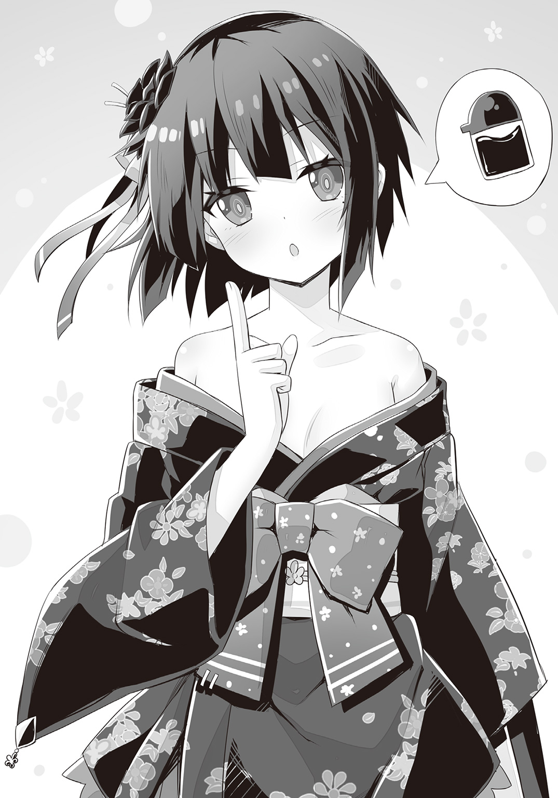
「そういうことでしたら遺跡の地下を探索するのが早いと思います」
「どういうことだ？」
「第二階層は別名《グルメエリア》と呼ばれていて様々な調理器具が揃っています。《グルメエリア》を開放すれば醬油・味噌・ケチャップ・マヨネーズに至るまでボタン一つで作れるようになりますよ」
「............」
そ、そんな方法があったのか！
たしかに第一階層の《温泉エリア》の設備は素晴らしいクオリティだった。
《グルメエリア》か......。
もしもそんなものが使えるようになれば、アジトの食糧事情は一気に改善されるだろう。
だがしかし。
もちろん第二階層を探索することには大きなリスクが存在している。
このアジトの各階層はカズミたちゴーレム姉妹によって守護されており、人間パワーをもってしても容易に突破できない作りになっているのである。
「......さて。どうしたもんかな」
カズミから想定外の提案を受けた俺は頭を悩ませるのであった。
～～～～～～～～～～
それから。
色々考えた結果......俺は遺跡の第二階層の探索を決意した。
正直に言うと怖い。
怖いけれど......逃げ出そうとする度に俺の記憶から温かい味噌汁の匂いがフラッシュバックする。
もう一度あの和食を食べられるなら死ぬことなど怖くない！
最近は自分の『強さ』も自覚できてきたし、いざとなれば開放済みの第一階層に逃げ帰る手段もある。
今日の探索は視察のつもりで安全第一の方針でいこうと思う。
「主さま。何か心境の変化があったのでしょうか？ 以前は遺跡の探索に対して消極的な考えでおられたようですが......」
「あはは。まぁ、個人的に色々と思うところがあってだな」
リアと一緒に第二階層に続く階段を降りる。
当然のことながら今回の探索にはカズミも同行してもらっている。
戦闘のエキスパートである二人が同行してくれているのだから、きっと安全に帰ってこられると信じたい。
「リアは嬉しそうだな？」
「当然です！ アジトの防衛力の拡大は以前より急務と考えていましたから！ カズミのようなゴーレムの味方が増えれば戦力として頼もしいです」
そうだな。
今回の探索の目的は単純に食生活を豊かにするというだけのものではない。
いつどんなタイミングで人間の力の悪用を考える存在に襲撃されても良いよう、防衛力を高める狙いもあるのである。
「うおっ。第二階層ってこういう風になっていたのか......」
暫く階段を降りていくと、ついには第二階層に到着する。
第二階層の特徴を一言でいうのなら『セレブな公園』という表現が相応しい。
第一階層が迷路のように入り組んでいたのに対して第二階層は、全体的に見晴らしが良くのどかな雰囲気を感じさせる場所である。
通路の両脇には川が流れ、規則正しく木が植えられていた。
「......大きいですね。第一階層と比べるとかなり面積がある気がします」
「進言。この遺跡はピラミッドの形状になっていますから。下の階層に行くほど広くなっていくのですよ」
「そうだったの!?」
「肯定。付け加えて言いますと、下の階層に行くほど守護するゴーレムは新しいものになっているので戦闘能力も上がっていると思われます」
「............」
あまり知りたくない情報であった。
だ、大丈夫。
俺も最近になって力の使い方も覚えてきたし、リアだって人間パワーを取り込んでパワーアップしているのである。
多少ゴーレムが強くなったところで俺たちの成長速度の方が上回っているに違いない。
「マスター。それではワタシはこの辺で。第一階層に戻っていますから何かあれば呼び出して頂ければと思います」
「えっ。帰っちゃうのか!?」
「申し訳ありません。ワタシに協力できるのはここまでです。ワタシたちゴーレムは他の階層攻略に協力しないようキャシーさまからプログラムされておりますから」
「............」
マジかよ！
そういう重要なことは早く言ってくれると助かるんだが......。
「それではマスター。ご武運を」
カズミはペコリと頭を下げると無表情のまま第一階層に戻っていく。
強力な戦力を失ってしまった俺は言いようのない不安に駆られるのであった。
～～～～～～～～～～
「随分と落ち着いた場所ですね」
「ああ。状況が状況ならピクニックでもしたいところなんだけどな」
リアと一緒に第二階層の探索を進めていく。
なんだか少しだけ照れくさいな。
こうして並んで歩いていると、まるで公園でデートしているかのような気分になる。
「お。あそこに何か木の実がなっているみたいだ！」
元の世界で言う『ヤシの実』のようなものだろうか？
背の高い木の上に二つの大きな実を確認することが出来た。
「あそこにあるのはバオバブの実ですね。表面の皮は固くて食べられませんが、中の果汁は濃厚で美味とされています」
流石は《グルメエリア》という感じかな。
よくよく見ると第二階層には、沢山のバオバブの樹が植えられているようであった。
「お！ 見てくれよ！ 木の実が沢山落ちているみたいだぞ！」
近くで見るとヤシの実とは微妙に形が違うようである。
バスケットボールのような形をしたバオバブの実は甘い香りを発していた。
「このバオバブの実っていうのは、どうやって食べるんだ？」
「食されたいのですか？」
「ああ。今回の探索は視察も兼ねているわけだしな」
「分かりました。そういうことでしたら」
おおー！
流石はリア！ 手際が良い！
懐からナイフを取り出したリアは、瞬く間の内にバオバブの実の皮をくり抜いて中の液体を飲める状態にしてくれた。
「うん。美味しい」
前の世界でヤシの実を食べた時は『微妙な味のジュース』という印象であまり好きではなかったのだが......。
このバオバブの実は絶品である。
リアの言う通り濃厚でメロンジュースのような味わいだった。
「はい。今度はリアの番」
「......ありがとうございます」
俺がバオバブの実を渡すと、リアは果実の表面に口をつけて中の液体を啜り始める。
出会った頃の間接キスで大騒ぎしていた時期が懐かしい。
今はもっと凄いことを沢山しているわけだし、間接キスくらいでは動じないか。
「なんだか少し照れくさいですね」
などと思っていたのだが――。
リアの方も意識してくれていたのか。
気にしていたのが俺だけなのかと思って少し悲しい気持ちになっていたぞ。
「主さまと同じ場所に口を付けることが出来るとは光栄です」
「そ、そうか」
なんだろう。
この甘酸っぱい気持ちは......。
もしかするとこれが世間一般的に言われてる『リア充』という状態なのだろうか？
リアと一緒にリア充！
へへっ。なんちゃって。
......。
............。
こんなことばかり考えているから俺は非リアなんだろうなぁ。
「あそこにベンチがあるみたいだし、せっかくだから少し休んで行こうか」
「はい。喜んで！」
後から考えると、俺たちがリア充オーラを振りまいてしまったのが敵を怒らせてしまったのかもしれない。
「シュコォォォオオオオ！」
突如として複数の敵影が水路から現れた。
カニ。
カニである。
その体長は三〇センチくらいはあるだろうか？
モンスターとしては少し小さいかもしれないが、巨大なカニ爪は迫力満点といった感じである。
どうして気付かなかったのだろう？
よくよく周囲を観察してみると、回りに落ちているバオバブの実の大部分は中味の果汁が空っぽの状態であった。
おそらくこのカニたちは、バオバブの実をエサにして《グルメエリア》で生きていたのだろうな。
「主さま。下がっていてください」
敵襲を前にしたリアは、俺の前に庇うようにして立つ。
「火炎連弾！」
出た！ リアの火炎連弾！
毎日のキスの成果だろうか？
リアの火炎連弾の威力は以前に見た時よりも増大しているようであった。
これは勝利フラグだな！
「なっ」
だがしかし。
リアの火炎連弾を受けたにも拘わらず――。
カニたちはピンピンしている様子だった。
「リアッ!?」
今度はカニたちの反撃。
カニたちは意外なほどに素早い身のこなしで、リアに対してチョキチョキとハサミ攻撃を与える。
「クッ......」
超人的な身体能力を持ったリアは、なんとか寸前のタイミングで攻撃を躱し続ける。
けれども。
カニたちが攻撃を繰り返すごとにリアが身に着けている衣服がビリビリに切り刻まれることになった。
「くらえええええええええええええええええ！」
このままではリアが危ない！
そう判断した俺はリアの周囲にいるカニたちに対して――。
殴る！ 蹴る！ 殴る！ 蹴る！
という我武者羅な攻撃を与えていく。
「「「「プキャアッ!?」」」」
俺の攻撃を受けたカニたちはベチャリと潰れて、甲羅からカニ味噌が漏れ出していた。
んん？ リアの火炎連弾を受けてピンピンしていたので凄く強いのかと勘違いしていたのだが......。
別にそんなこともなかったのだろうか？
「......そうか。分かったぞ！ このカニは打撃攻撃に弱いんだ！」
簡単なことだった！
このカニたちがリアの火炎連弾を受けてピンピンしていたのは、自身が『水タイプ』だったからだろう。
水タイプのモンスターに対して火属性の魔法は『効果がいまひとつ』になる。
ゲームの世界では常識とも言える知識である。
「......いえ。それはたぶん違うと思います」
リアが小さな声で何事か呟いた気がしたが、上手く聞き取ることが出来なかった。
勢い付いた俺はそのままカニのモンスターを一掃していく。
「主さま！」
最後のカニを倒した直後のことであった。
戦いに決着がついたことを覚ったリアは勢い良く俺の体に飛びついた。
「この度は......私のことをお守り頂きありがとうございます！」
うおっ！ どうやら『戦いに勝利する度にリアからおっぱいを押し付けてもらえるシステム』が作動したようである。
しかも今回は服が破れて下着越しに胸の感触が伝わってくるので、いつも以上に御褒美度が高い。
こんな雑魚モンスターを倒しただけでおっぱいの感触を楽しめるとは......。
今回のことだけでもグルメエリアを探索しに来た甲斐があったというものだろう。
～～～～～～～～～～
「リア。怪我はなかったか？」
「......はい。主さまのおかげで助かりました」
無事にカニのモンスターを撃退した俺たちは第二階層の探索を再開していた。
「その......なんだ。一度、上に戻って着替えた方がいいかな？ 服がボロボロになっちゃったみたいだけど」
「だ、大丈夫です！ 私の失態で探索を中止するわけにはいきません!!」
むむっ。
これは少し困ったことになったぞ。
今更言うまでもなくカニたちに服を切られたリアの姿は、下着が見えて凄くエッチな感じになってしまっている。
けれども。
だからといって探索を中止してしまうと、リアは自分を責めて落ち込んでしまうのではないだろうか。
そんな感じで俺がリアのあられもない姿に戸惑いを覚えていた直後であった。
「ビビビビビ！ 侵入者ヲ発見！」
目の前にメタリックな色合いの人形を発見する。
つ、ついに出やがったな！
お前がこの階層を守護するゴーレムか！
「コレヨリ私ハ戦闘態勢ニ移行シマス」
ゴーレムは宣言すると、ガシャンガシャンという音を立てながら自らの体を変形させていく。
最終的に出現したのは――銀色に輝く球体だった。
んん？
これが第二階層を守るゴーレムの戦闘形態か。
どこからどう見てもあまり強そうな外見には思えない。
第一階層のカズミの戦闘モードが禍々しかっただけに拍子抜けした気分である。
「主さま！ 気を付けて下さい！」
リアが注意を促した次の瞬間。
球体になったゴーレムは第二階層の水路から水を吸い込んでいく。
「戦闘準備ガ完了シマシタ。コレヨリ侵入者ヲ迎撃シマス」
このゴーレム......水を操ることが出来るのか!?
大量の水を吸い込んだゴーレムは巨大なクラゲの姿に変化した。その全長は一〇メートルくらいだろう。
「きゃっ」
ゴーレムはウネウネとした触手を駆使してリアの体を拘束する。
巨体の割にそのスピードは速かった。
「リアッ!?」
クソッ！ リアが捕まってしまった！
早く......早くリアを助けなければ！
俺は勇気を振り絞ってゴーレムに向かって突撃していく。
標的はリアを捕まえている触手である。
「どりゃああああああああ！」
リアとの訓練を思い出せ！
俺は身体強化魔法を発動させて、ゴーレムの体に向かって全力のパンチを浴びせにかかる。
もの凄い威力で攻撃できた、という感覚があった。
......が、ダメ。
パシャンッと水を弾く音が聞こえただけでゴーレム本体はピクリともしていない。
なんてこった！
いくら人族の魔力量が桁外れでも関係ない。
水の体に対しては有効なダメージを与えることが出来ないのである。
「主......さま......」
触手に体を締め付けられてリアは苦しそうにしていた。
落ち着け。
規格外の戦闘能力を秘めているゴーレムだが、一つだけ明確な弱点が存在していた。
これはカズミに教えてもらった話だが、遺跡の中のゴーレムの体の何処かには絶対に『非常用停止ボタン』が付属されているらしい。
だから奴の体のボタンさえ押すことができれば......。
「あった！」
巨大クラゲに変形したゴーレムの背中にはたしかに『非常用停止ボタン』が付いていた。
どうする？
ゴーレムの体は分厚い水に覆われている。
正面からボタンを押しにいくのは自殺行為でしかないだろう。
「となると......これしかないよな」
俺がそこで拾い上げたのは『バオバブの実』である。
こいつを投げてボタンのあるところにまで届かせることができたら......全てが上手くいくかもしれない。
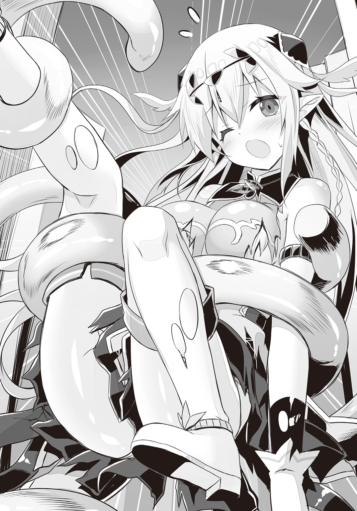
「貫けぇぇぇええええええええええ！」
俺が掌の中のバオバブの実を投げつけた次の瞬間。
摩擦熱によりバオバブの実が燃え上がり、巨大な火の玉と化す。
プシュウウウウウウウウウウウウウウウウウウウウウウウウウウウウウウウウウウウウウウウウウウ！ と。
ゴーレムの体に火の玉が命中した後に、第二階層は凄まじい白煙に包まれていた。
「非常ボタンヲ押シタ人族ノ生体反応ヲ確認。戦闘態勢ヲ解除シマス」
白煙の中からゴーレムの声が聞こえてきた。
「コレヨリ私ハ、貴方ヲ新シイ主人ト認識シマス」
良かった。
白煙に包まれて様子を上手く確認することが出来ないが、どうやら作戦は無事に成功したようである。
「主さま！」
勝負に決着がついたことを悟ったのだろう。
白煙の中から出てきたリアは勢い良く俺の体に飛びついた。
「......主さま。この度は......二度も私のことをお守り頂きありがとうございます」
こ、これは！
本日二度目の『戦いに勝利する度にリアからおっぱいを押し付けてもらえるシステム』ではないか！
いつもは大した活躍もしていないのにおっぱいを押し付けてもらえて、逆に申し訳ない気持ちになっていたのだが......。
今回ばかりは何も遠慮することはない。
暫くは勝利の味（おっぱいの感触）を楽しむことにしよう。
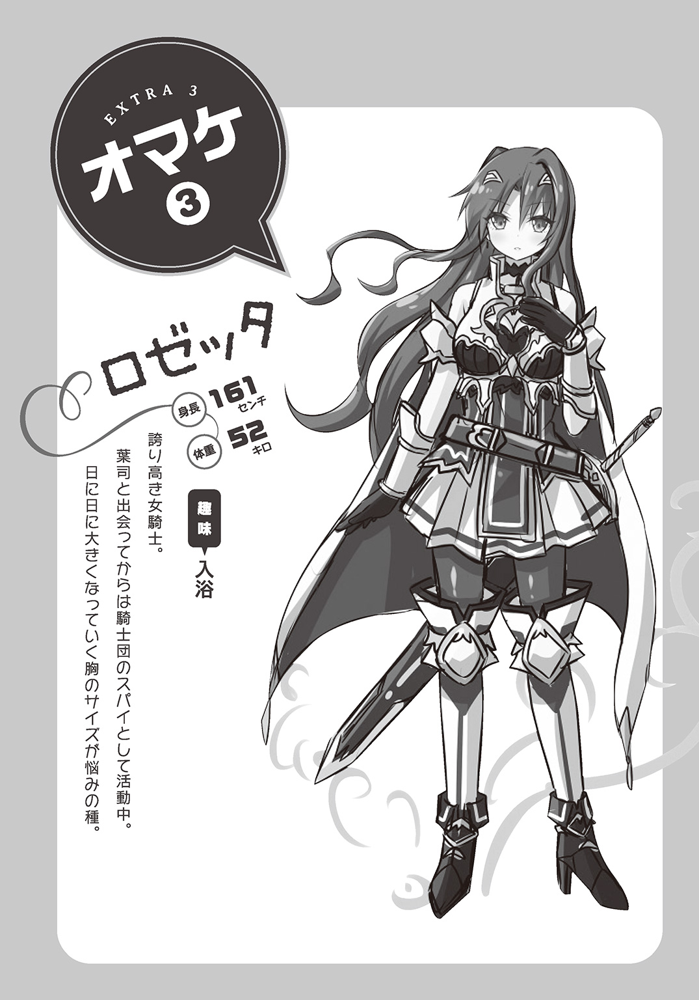
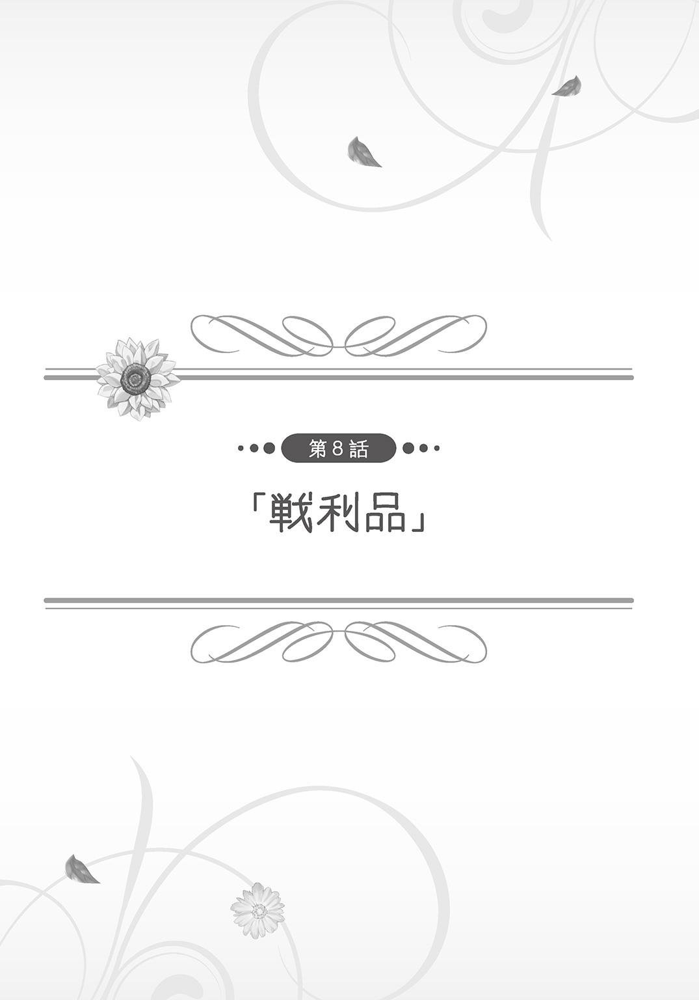
「ビビビビ！ 戦闘態勢ノ解除ヲ完了シマシタ」
ゴーレムの背中に付いていたボタンを押してから一分くらいの時間が過ぎただろうか？
唐突に奇声を上げたゴーレムはメキメキという音を立てながら人間の形に変化していく。
ここまでは前回カズミを仲間にした時と同じような光景である。
「マスター。今回はウチのことを眠りから覚ましてくれて感謝アル」
最終的に現れたのは――茶色の髪の毛を持った一人の美少女であった。
身長はカズミよりも少し高いくらいだろうか？
人形のように可愛らしい顔立ちをしていた少女はチャイナドレスを着ていた。
「えーっと......。キミは......？」
「自己紹介が遅れたアル。ウチの名前はフタバ。第二階層《グルメエリア》を守護するゴーレムアル」
「......その、どうしてチャイナドレス？」
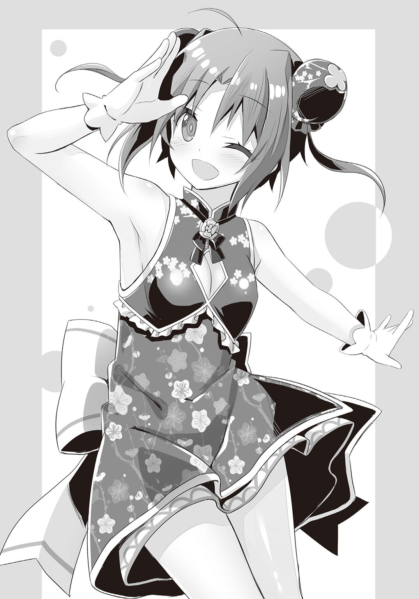
「おおー！ マスターはウチの衣装を知っているアルか!? この衣装は前マスターのキャシー様の趣味アル。キャシー様は大の旅行好きでウチたちゴーレムのコスチュームを世界各国の民族衣装に設定したアル」
今明かされる衝撃の事実......！
カズミが和服を着ていたのは、そういう理由があったんだな。
それにしてもチャイナドレスで語尾が『アル』っていうのはベタ過ぎるだろう。いくらなんでも。
「フタバ。俺はこの階層で『醬油』が作れると聞いていたのだが......」
「おおー。カズミ姉さんからの情報アルか。よくご存じで！」
フタバはカズミの妹設定だったのか。
どちらかというと外見的にはフタバの方が発育が良い感じはするんだけどな。
チャイナドレスのスリットからチラチラと見える生足が艶めかしい。
「醬油が欲しいアルか？ マスターが望むなら向こうにある施設の使い方を説明するアル！」
「お願いするよ」
長かった。ようやくこれで異世界召喚初日から続く『塩味』から解放されるのか......。
感慨深い想いに浸りながら俺はフタバの背中を追うのであった。
～～～～～～～～～～
「驚きました。遺跡の中にはこのような施設があったのですね」
フタバに連れられて辿り着いたのは、様々な機械が置かれている工場のような部屋であった。
う～ん。工場なんて学生時代の社会科見学の時以来だな。
こんなハイテクな施設がのどかな公園のような階層にあるのだから驚きである。
「うおっ。なんだあれは!?」
そこで俺の視界に入ったのは、ベルトコンベアーに乗って運ばれてくる大量のカニのモンスターであった。
「おやっ。クローンクラブが生産されたアルか」
「......クローンクラブ？」
「クローンクラブはこの階層を守護する魔物アル。アジトの中に魔力がある限り無限に生産が可能アル。この階層に生息しているのは常に一〇〇匹で、数が減ると新しいクローンクラブが生まれる仕組みになっているアル」
「............」
なるほど。
つまりは俺が探索中にクローンクラブを倒しちまったので、補充用の兵隊が作られているっていうわけか。
食物だけではなくモンスターまで製造しちまうなんて......。
本当にこの遺跡は何から何まで常識外れだな。
「醬油を作るにはこの装置を使うアル」
フタバが指さしたのはパソコンのディスプレイのような物体であった。
試しに電源を入れてみる。
その直後。
ディスプレイ画面には『醬油』・『ポン酢』・『味噌』・『ケチャップ』・『マヨネーズ』などのアイコンが表示される。
「お、驚きました！ ボタンを押した途端、この箱の中に絵のようなものが浮かび上がりましたよ!?」
この世界の住人にとってはパソコンっていうのは馴染みのないものなんだろうな。
ディスプレイを目の当たりにしたリアは、新しい玩具を与えられた子供のように興奮していた。
「ここで醬油アイコンを選択すればいいのか？」
「残念ながらウチにも詳しい使い方は分からないアル。いつもキャシー様がこの装置に触れて醬油を作っていたのは覚えていたアルが......」
そうだったのか。
けどまあ、ここまでくれば後は手探りでも分かりそうな気はするな。
どれどれ。
試しに醬油アイコンをクリックしてみるか。
するとその直後。
（選択料理）
醬油
（材料在庫ゲージ）
タマゴ ０パーセント
トマト ０パーセント
小麦 18パーセント
大豆 25パーセント
............
ザッとこんな感じの文章がディスプレイに表示される。
画面の下の方に『調理決定』のボタンがあるみたいだった。
めちゃくちゃ分かりやすいシステムで助かるな。
『醬油一人前を作るためには小麦５パーセント、大豆５パーセントを消費する必要があります？ よろしいですか？』
そんなメッセージが表示されたので、すかさず俺は『はい』を選択。
瞬間。ウィィィィィィンという機械音を上げながら工場のアームが部屋のテーブルに移動を始める。
ボトンと透明のビンが落ちたかと言うと、アームの中から黒色の液体が注がれ始める。
どれどれ。
前回は醬油だと思ったら魚醬だったというアクシデントがあったからな。
味の方も確認してみるか。
俺はビンの中の液体を指の上に載せ、ペロリとそれを舌で舐める。
「おおー！」
間違いない！ これは醬油である！
一万年前の材料を使っているらしいので不安もあったが、味の方は特に問題ないみたいである。
いやー。
まるでファミレスでドリンクバーを利用するかのような手軽さだったな。
しかし、そんな俺の感想とは対照的に――。
どういう訳かリアは俺に対してキラキラとした尊敬の眼差しを向けていた。
「凄すぎます！ このような複雑な装置を容易く操るとは......!? 流石は主さまです！」
この子は一体何を言っているのだろうか？
いつも俺を立ててくれるのは嬉しいが、大袈裟に過ぎると流石にバカにされた気分になる。
「いやいや。これは凄く簡単なんだぞ？」
「ご謙遜を！ このような装置を自由に操ることが出来るのは主さまくらいのものでしょう。ハッキリ言って私には主さまが何をしているのか全く理解することが出来ませんでした」
「............」
本当に凄く簡単だったんだけどなぁ。
どうやら口で何か言ったところで納得してくれないみたいである。
「ちょっと今から使い方を説明するから聞いてもらえるか」
「......は、はい。承知いたしました」
俺はリアに説明するためにディスプレイを初期画面にまで戻す。
「この画面に沢山イラストが表示されているだろう？」
「......どうやらそのようですね。人族の技術力には本当に驚かされてばかりです」
「まずは画面の中のイラストをダブルクリックしてだな......」
「ダ、ダブルクリック!?」
カチカチとマウスを二回クリックするとリアは目を丸くして驚いているようであった。
「ううぅぅ......。大変、申し上げにくいのですが......やはり私には......そのような高度な技を理解できそうにありません......」
パソコンの操作について教えていると、リアは今にも泣きだしそうな表情になっていた。
こういうのは難易度の問題ではないんだろうな。
よくよく考えてみると......自分にとって馴染みのない機械に触れることは凄く恐ろしいことなのかもしれない。
パソコンの操作は俺が知っていれば大丈夫そうだし......。
リアに覚えてもらうのはもう少し後になってからでもいいだろう。
～～～～～～～～～～
それから。
醬油作りに成功した俺は他にも作れるものがないか検証してみることにした。
初めて作った醬油は味の方に特に問題はないようだったが......。
流石に一万年前の食材で作ったものを食べるのは気が引ける。
そういうわけで俺は一度『在庫カプセル』にあった食材を取り出して、アジトにあった食材と入れ替えることにした。
「スゲー！ 出てくる出てくる！」
これまで俺が製造に成功したのは、『醬油』・『味噌』・『ポン酢』・『ケチャップ』・『マヨネーズ』の計五種類の調味料である。
欲を言うならば『ウスターソース』も作っておきたかったのだが、これについては材料が複雑過ぎて断念することにした。
日本にいた頃は特に気にしていなかったんだけど、『ウスターソース』の材料って野菜と果物だけで優に一〇種類以上あったんだな。
ソース系に関しては後で時間のあるときに作ることにしよう。
「おっ。この施設ではお菓子も作ることが出来るのか!?」
画面をスクロールしていくと、『チョコレート』・『マシュマロ』・『キャラメル』などのアイコンを発見することが出来た。
異世界に召喚されてから甘いものにも飢えていたので有り難い。
「グッ。しかし、意外に材料を揃えるのが大変そうだな」
メインで使用する砂糖は、以前にアダイから少しだけ分けてもらったものがあったはずだが......。
そもそもカカオなんか何処で手に入れればいいんだよ。
こちらも前途は多難そうだった。
「いや。これなら作れるか？」
そこで俺が目を付けたのはキャンディの項目である。
これならば水と砂糖、それに麦から抽出されるデンプンがあれば作ることが出来るらしい。
後はアクセントとして何か『果汁』が必要だよな。
せっかく作っても『砂糖味』のキャンディなんて寂しいし。
はて。
アジトの中に何か果物なんてあったっけ。
......。
............。
暫く考えていると俺の頭の中にピコーンとアイデアが浮かび上がる。
そうだよ。
一個だけ面白そうな果物があったじゃん。
名案を閃いた俺はさっそく材料を取りに部屋を出ることにした。
それから一時間後。
結論から言うとキャンディの生産には成功したらしい。
工場のアームの中からは、透明な包装に包まれた緑色のキャンディが大量に出てくることになった。
「うん。美味しい」
味の方もバッチリである。
コンビニとかで売っているキャンディと何ら遜色のないクオリティだと思う。
名付けて『なんちゃってメロンキャンディ』といったところだろうか。
《グルメエリア》に生えていた『バオバブの実』がメロンの味に近かったから絶対に上手くいくと思っていたんだよな。
後で色々な味を作ってリアにプレゼントすることにしよう。
～～～～～～～～～～
菓子作りに熱中しているうちに夜になった。
「よし。今日は第二階層の攻略を祝して乾杯！」
「はい。乾杯です！」
《グルメエリア》には様々な食品を製造する工場の他にも大・中・小の食事部屋があった。
大は一〇〇人以上の人数が食事をとれるパーティールーム。中は二〇人くらいの人数が入る万能部屋。小は五人くらいの人間が入れるこぢんまりとした場所である。
俺はリアと一緒に食事部屋（小）に足を運んで夕食をとる。
本日のメインはというと『カニ鍋』である。
《グルメエリア》に生息しているクローンクラブは、侵入者を撃退する防衛力としても有用だが、普通に食べることも出来るらしい。
そういう訳で俺たちは、贅沢にもクローンクラブを丸ごと一匹使った鍋を作ることにした。
「うおっ！ なんだこれ！ スゲー美味いぞ！」
単に味が良いというだけではない。
クローンクラブを食べると体がポカポカと温まり力が溢れてくるようだった。
「おそらくそれはクローンクラブの中に含まれる魔力のせいだと思われます」
「これが魔力......？」
「はい。モンスターの肉には魔力が含まれていますから。そのモンスターが強ければ強いほど高濃度の魔力を摂取することが可能になります」
言われてみれば納得である。
この体が求めて仕方がないという感覚は俺がこれまで食べてきた食物とは一線を画すものがある。
なるほど。
これが魔力を得るという感覚かぁ。
リアたちが必死になって俺の唾液を求めてくる気持ちが分かったよ。
「これが醬油ですか。魚醬と似ていますが、癖がなくてまろやかです。なんと素晴らしい味なのでしょう！」
「そうか。リアが気に入ってくれたみたいで嬉しいよ」
本当はポン酢の方がカニ鍋には合う気はするのだけど......。
意外と醬油で食べるのも悪くない。
今日の夕食はリアに醬油の魅力を伝えるためにポン酢は封印しておこう。
「ささ！ おかわりはいくらでもあるアル！ 二人とも沢山食べるアル！」
「その台詞をお前が言うのかよ......」
「ふふふ！ ウチの特技は『食器の後片付け』アル！ 活躍するのはここからアルよ！」
ちなみに今日の料理を用意してくれたのはリアであった。
カズミの特技が『マッサージ』だったように遺跡を守護するゴーレムは、それぞれ何らかの分野のプロフェッショナルである。
本当はフタバが料理を作れると良かったのだが......。
残念ながら《グルメエリア》を守護するゴーレムの癖にフタバは料理の腕が壊滅的にダメらしい。
「どうしてそんな微妙な機能を......」
「ウグッ。それはキャシー様が自分で料理を作るのが好きだったからアル！ ウチだって本当は料理を作れるようになりたかったアルよ！」
心なしか表情を曇らせながらフタバは言う。
本人も微妙な機能を付けられてしまったことに対して憤りを感じているらしい。
フタバの特技に関しては置いておくとして、グルメエリアを開放できたのは大きな収穫だった。
これで一年中カニ食べ放題である！

第二階層の《グルメエリア》を開放してからどれくらいの時が過ぎただろうか。
生活の拠点を第二階層に移した俺は相変わらず自由な生活を送っている。
食事事情も改善され、今まで以上に快適な暮らしが出来ていると思う。
「キュー！ キュー！」
俺が新しくなった寝室で寝転がっている時であった。
ミレアちゃん特製のメイド服に身を包んだライムが俺の頰をツンとつつく。
「ん？ 散歩にいきたくなったか？」
「キュー！」
人間の言葉を喋れるわけではないのだが、ライムの考えていることはなんとなく分かる。
今日のように妙にスキンシップが多い時は『構って欲しい』というサインであった。
「よし。それじゃ一緒に泉にでも行くか」
「キュー！ キュー！」
歩いている途中に落ちてしまった聖遺物は、ライムが回収してくれるので安心できる。
ライムと一緒に森の中を散歩することは、俺にとって欠かすことの出来ない習慣の一つになっていた。
～～～～～～～～
ところ変わってここは葉司たちの住んでいる《オストラの森》の南部である。
「何......？ この森......!?」
森の中の異変に気付いた少女はポツリとその場に立ち尽くしていた。
彼女の名前はカノン。
最強の魔族『吸血鬼』にして葉司暗殺の依頼を引き受けた刺客である。
「この森は異状......。静かすぎる」
王都から西方に三〇キロメートルほど離れた場所にある《オストラの森》は、駆け出しの冒険者が狩場として使用するエリアであった。
本来ならば森の中にはスライム、ゴブリンなどの低級モンスターが多く存在しているはずなのだが――。
どれだけ探索してもカノンが魔物に遭遇することはなかった。
低級モンスターの中には近くに圧倒的な強者がいると、萎縮して巣穴から出てこなくなるものが存在している。
この森にモンスターが出現しない原因が人族にあるのだとしたら――。
想像しただけでカノンは自らの内より湧き上がる闘争本能を抑えることが出来なかった。
「早く......早く人族と戦いたい」
吸血鬼を最強種族たらしめている要因の一つに彼らの好戦的な性格にあった。
常に好敵手を求める彼らの姿勢は恵まれた潜在能力を一段と引き上げる結果となっていたのである。
「なに......!? あの魔力......!?」
その時カノンの視界に入ったのは、俄には信じられない光景だった。
「キュー！ キュー！」
「おいおい。飲み過ぎたらまた腹を壊すぞ」
一組の男女が泉の水を飲んでいた。
男の方はこれといって特徴のない平凡なニューマンに見えるが、女の方は明らかにレベルが違う。
「これが......人間の力なの......!?」
百戦錬磨の経験を積んできたカノンには分かる。
これまで戦ってきた中で最も強かった敵と比較をしても十倍、いや、それ以上はあるだろうか？
自分とそう変わらない小柄な少女の体には常軌を逸した魔力が込められていた。
「......面白い」
予想外の強敵に遭遇したカノンの頭の中からは、仕事のことなどスッパリと消えていた。
今回カノンが上司であるグレイスから受けた依頼は、『人族のアジトを特定すること』だった。
魔族のネットワークを駆使して葉司たちが《オストラの森》を出入りしていることまでは突き止めたグレイスだったが、アジトの正確な位置までは特定することが出来なかったのだ。
そこでグレイスは部下であるカノンにアジトの特定任務を依頼して――今に至るというわけである。
「......敵は強ければ強いほど燃える」
勝負の高揚感に刺激されたカノンの両目は、ルビーのような紅色に染まっていく。
戦闘時に目の色が紅色に変色することは、吸血鬼の特徴の一つであった。
「殺す」
目の前の標的に向かって飛びかかる。
このスピードには何人たりともついてこられるはずがない。
カノンは驚異的な跳躍で、一秒後には標的の目の前に迫っていた。
（......もらった！）
鋭く研いだカノンの爪は、その気になれば鋼鉄すらも切り裂くことが可能である。
そのまま勢い良く少女の首を刎ねようとした瞬間であった。
「うおっ。キミ!? 大丈夫だった？」
完全に攻撃が入ったと確信を抱いた直後。
ポフンッと。
カノンの体は男の胸の中に吸い込まれることになる。
（なに......？ これは一体......どういうこと？）
自らの正気を疑わずにはいられない。
どういうわけか目の前にいたのは、完全にノーマークだった平凡なニューマンだった。
（意味が分からない。この人は......何？）
目の前の男......葉司の姿を目にしたカノンは呆気にとられていた。
どう考えても戦闘に向いた体つきには思えない。
魔力量も平凡の域を出ていないので魔術師タイプというわけでもないのだろう。
この時カノンは事情を知らないでいたのだが――。
異世界アーテルフィアにおいては、互いの魔力量が著しく離れている場合においては、相手の実力を計測することが不可能になるオーバーフローという現象が確認されていた。
カノンのレベルでは、ライムの実力を測ることまでは出来ても葉司の実力まで計測することは出来なかったのである。
「殺すっ！」
相手が何者であろうと関係ない。
そう判断したカノンは鋭い手刀をもって葉司の首を刎ねようとする。
「こらこら。ダメだろ。女の子が乱暴な言葉を使っちゃ」
「っ！」
だがしかし。
カノンの放った渾身の手刀は、葉司の腕に摑まれて阻まれることになる。
（......噓!? 私は殺すつもりで攻撃したはずっ）
正面から殴りにいっても勝ち目はない。
カノンはポケットの中から愛用の短剣を取り出して葉司の体を斬り付ける。
「これならっ！」
渾身の一撃も空しく、バキンという金属音が鳴り響く。
音のした方に目をやると、たしかに男の体を捉えたはずの短剣は刃が二つに折れていた。
（......ありえない！ これは魔族に伝わる秘剣なのに......!?）
絶望というより他はなかった。
この短剣でダメージを与えられないということは、相手の防御力は少なく見積もってもオリハルコン級のものがある。
一体どういう鍛え方をすれば、これほどの肉体を身に付けることができるのだろうか？
カノンにはまるで想像がつかなかった。
「これは玩具の包丁かな？ ダメだぞ。キミみたいな可愛い女の子がこんな物騒なものを持っていたら」
「............ッ！」
どうやら敵は舌戦においても非凡な才能を有しているようであった。
よりにもよって両親から授かった秘剣を『玩具』扱いされるとは......。
葉司の言葉は、冷静沈着なカノンに揺さぶりをかけるものであった。
（落ち着かないとダメ。頭に血がのぼった状態で勝てる相手ではない......！）
ここで挑発に乗ってしまうと相手の思うつぼである。
カノンは自らの感情をコントロールすべく、スウッと深呼吸をする。
「貴方......。名前は？」
「俺か？ 俺は雨崎葉司だ」
「......そう。貴方が」
驚きこそしたが、納得の感情が先にきた。
グレイスが警戒するのも頷ける。
最強の魔族『吸血鬼』のカノンの目から見ても、人族の力は常識の外側にあるものだった。
「私の名前はカノン。覚えていて。たぶんだけど......また近いうちに会うことになると思うから」
カノンは捨て台詞を吐くと、木から木に飛び移り葉司の元を後にする。
「えーっと......。なんだったんだろう。あの子は......？」
その場にポツンと残された葉司は、暫く茫然と立ち尽くすのであった。
～～～～～～～～
泉での一件から暫くのこと。
午前三時。
周囲の生物たちが寝静まり、周囲は奇妙なまでの静けさに満ちていた。
泉での失敗を経験したカノンは、葉司暗殺の計画を携え《オストラの森》を再訪していた。
「あそこに......あの時の人族が......」
そこでカノンが発見したのは岩場に作られた洞窟であった。
僅かにだが洞窟の奥から葉司の匂いが漂っている。
優れた嗅覚を有する吸血鬼は、相手の残した匂いから居場所を特定することが可能だった。
『カノン......と言いましたか。貴女の強さに惹かれました。是非とも我々の計画に協力して頂きたい』
その時カノンの脳裏を過ったのは、同じ魔族であるグレイスに拾われた時の出来事であった。
その絶対的な『強さ』故にカノンは孤独だった。
大の大人が数人がかりで挑んでも太刀打ちできない――。
幼いながらに一族の中でも異質な『強さ』を持っていたカノンは、周囲の嫉妬を買い、里から追い出されることになったのである。
『......我々には貴女の強さを受け入れられるだけの器がある。共に愚かな同胞たちを見返してやろうではありませんか』
自分の居場所を守るためにも――。
カノンは誰よりも強くならなければならなかった。
（私はもう......一人ぼっちは嫌......）
仮に相手が人族だろうと敗北は許されない。
本来ならばアジトの場所を突き止めた時点でカノンの仕事は完了していたはずなのだが――。
戦いに負けたまま終わるわけにはいかない。
たとえ相手が人族といっても寝込みを襲えば十分に勝算はあるだろう。
覚悟を決めたカノンがアジトの中に足を踏み入れた直後であった。
「なっ」
天井に張り付いていた一匹のモンスターがカノン目掛けて強襲する。
間一髪のタイミングであった。
超人的な反射神経を持った吸血鬼だからこそ攻撃を回避できたが、並みの魔族ならば先程の一撃でダウンしていたに違いない。
（私の速度でもギリギリだった......。一体何が......？）
疑問を抱きながら振り返った時、カノンは絶句した。
「キュー！」
何故ならばそこにいたのは、外見的には何の変哲もない唯のスライムだったからである。
「............」
言葉が出なかった。
信じられない。
最強種族『吸血鬼』が最弱の魔物『スライム』に後れを取ることなどあってはならないことである。
敵スライムの数は二匹。
まともに相手をしていては戦闘が終わる前に本命に気付かれてしまうだろう。
「クッ......」
そう判断したカノンは悔しさで唇を嚙みしめながら、洞窟の奥に進んでいく。
「貴女は......昨日の」
洞窟の地下に続く階段の手前に青髪の少女がいた。
その少女がただものでないことは泉での一件から知っている。
「ギュウウウウウウ」
そして青髪の少女には以前に会った時とは決定的に違う点がある。
それは少女がこちらに対して、明確な『敵意』を持って視線を向けているという点である。
ライムの攻撃。
ライムは小さな足をバネにして跳躍すると、勢いを付けてカノンに向かって殴りかかる。
「クッ......！」
ギリギリのところでガードに成功したカノンであったが、骨の芯にジンと響くようなダメージを受けることになる。
それはこれまでカノンが味わった経験のない――とんでもなく重いパンチであった。
現時点では、二人の力量は互角だった。
ライムとカノンが一対一で戦闘を行えば勝負の行方は五分と五分であっただろう。
だがしかし。
アジトの中は合計四匹にも及ぶライムの子供たちが警備を務めている。
カノンの敗因は背後から迫りくる脅威に気付かなかったことであった。
「......しまっ」
スライムたちに体を取り込まれたカノンの意識は――深い闇の中に落ちていくのであった。
～～～～～～～～
その日の朝。
俺は女性の悲鳴で目を覚ますことになる。
嫌な予感がする。
おそらくロゼがウチにやってきてスライムたちに捕まってしまったのだろうな。
このパターンは過去に何度も経験した『いつもの』やつである。
「えーっと......もしかしてキミは？」
だがしかし。
意外なことに俺の予想は外れていた。
声のした方に向かってみると、そこにいたのは森の泉で出会った幼女であった。
名前はたしか......カノンと言っただろうか。
当然のことながら子供スライムに襲われた女の子は、下着姿のまま大変けしからん状態になっている。
「クッ......。殺して......」
うおおおおお！
まさかリアルで『クッ殺』を聞けるとは思っていなかったぜ！
本来ならこの役目は騎士であるロゼが担ってしかるべきだとは思うんだけどな。
異世界で初めて聞く『クッ殺』が幼女からとは驚きである。
「主さま。今すぐに離れて下さい。この者は吸血鬼です！」
「......えーっと。話が見えてこないのだが、危険な種族なのか？」
「ええ。吸血鬼というのは魔族の中でもとりわけ高い戦闘能力を持った種族です。この者は主さまの命を狙うために送られてきた刺客に違いありません！」
「カノン。その話は本当なのか？」
「............」
カノンは不機嫌そうに眉を寄せるだけで無言を貫いていた。
「尋ねても無駄だと思われます。暗殺者にとって依頼人の名前を口にするのは、死より屈辱を伴うことでしょうから」
「ちょっと待て。流石に決めつけすぎじゃないか。この子がそもそも俺の命を取りにきた刺客だという証拠は何処にもないんだろ？」
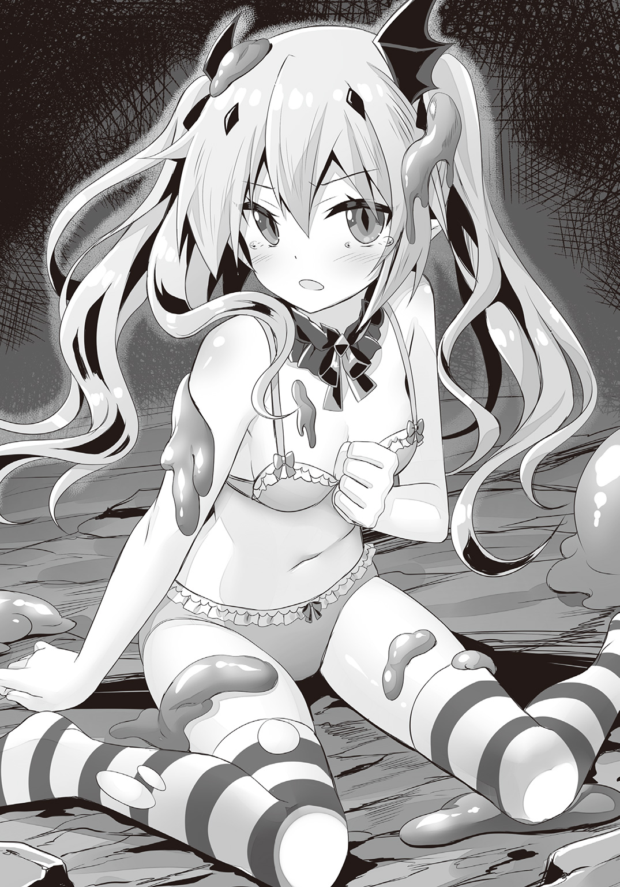
「そ、それはそうですが......」
俺が追及するとリアはしどろもどろになっていった。
「なぁ。カノン。このエルフのお姉さんが言っていることは本当なのか？」
「......早く殺して。私は戦いに負けた。これ以上、生きていても意味がないから」
カノンの表情は晴れなかった。
この子は一体何を言っているのだろう？
もしかしたらアジトを警備しているスライムに捕まってしまったのがショックだったのだろうか？
「えーっと。ちょっと待っていてくれ！ すぐに戻るから」
名案を閃いた俺は急いで地下二階層に向かう。
そこで俺が持ってきたのは、スライムの粘液を落とすためのタオルと昨日《グルメエリア》で作ったばかりの砂糖菓子であった。
「これは......!?」
「それはキャンディだよ」
「............」
あまりピンと来なかったのかカノンは不思議そうにキャンディを見つめていた。
どうやらこの世界のキャンディは一部の貴族の間にしか流通していないものらしい。
種類も『砂糖味』みたいなシンプルなものしかないから俺の作った『なんちゃってメロン味』なんて複雑なものがあるはずもなく――。
完成品を食べたリアも驚いていたっけ。
「ほら。これをあげるからもう悪いことをしちゃダメだよ」
カノンにキャンディを渡すとタオルで体を拭いてやる。
俺の思い過ごしだろうか？
キャンディを受け取ったカノンは僅かにだが笑顔を浮かべてくれたような気がした。
～～～～～～～～
一方。
アジトを出たカノンはトボトボと森の中を歩いていた。
（......酷い目にあった）
今日のことはカノンにとって色々な意味で衝撃的だった。
服を脱がされて辱められたというのもそうだが何より脅威だったのが、底知れない『強さ』を持った葉司の存在である。
カノンは何気なく葉司からもらったキャンディに目を向ける。
これまでに見たことがない食物だった。
太陽の日差しを浴びたキャンディは宝石のように輝いている。
「............!?」
カノンがキャンディを口に入れた次の瞬間。
口いっぱいに強い甘みが広がった。
（美味しい......！）
甘さの中にある僅かな酸味は果物を使って出しているのだろうか？
元々あまり甘いものを食べたことのないカノンにとって葉司の作ったキャンディは、刺激の強すぎるものであった。
口の中のキャンディが溶けきった頃には、今回の敗北による悲壮感は不思議と消えていた。
「おやおや。ご機嫌ですね」
森の中に聞き覚えのある男の声が鳴り響く。
「......グレイス。どうしてここに」
「どうしてとは酷いですね。私は貴女のことが心配で来たのですよ」
どこまで本気で言っているのか分からない。
少なくともカノンの知る限りでは、この男は他人を心から心配するような性格ではなかった。
しかし、性格がどうであれカノンにとってグレイスは掛け替えのない仲間の一人。
個体数の少ない魔族は互いに寄り添わなければ生きていくのが難しいのである。
「それで目的の男の居場所は摑めたのですか？」
「バッチリ。問題ない」
「そうですか。それは良かった」
部下の報告を受けたグレイスは仮面の下で柔和な笑顔を浮かべる。
「ところでカノン。何故、余計な真似をしたのですか？」
「......なんのこと？」
「私の前で噓をつき通せるとは思わない方がいい。部下に跡をつけさせていたのですよ。どうです？ 人族は強かったですか？」
「............」
下手に誤魔化しても事態をこじれさせてしまう可能性が高い。
そう考えたカノンは正直に全てを話すことにした。
「......強かった。たぶん私では勝てない」
どう足搔いてもあの人に勝てるイメージが湧かない。
カノンにとって葉司の強さとはルールの外側にあるもののように思えた。
「そうですか。それは困りましたねぇ。貴女は明日の作戦の要だ。人族に勝てないとあれば私にとって貴女はもう用済みですね」
「っ!?」
そのときカノンの脳裏に過ったのは、幼少の頃に魔族の集落から追い出された凄惨な記憶だった。
「ふふふ。安心して下さい。人族に勝てないのであれば彼らと同じ力を手に入れれば良いのですよ」
「それは......!?」
そこでグレイスが懐から取り出したのは錠剤の入った透明のビンであった。
「カノンには以前に話しましたよね。このビンの中に入っている薬は人族の《聖遺物》の力を元にして作られたものなのですよ。一粒飲めば人族と同じ力が手に入ります」
グレイスはこの聖遺物を模して作った錠剤をＤＤと呼んでいた。
ＤＤの服用者は短期的には本家の聖遺物すら超える力を手に入れることが出来るが、効果の持続時間が限定されている。
また、一度使用したが最後。
悪質な中毒症状を患い、たちまち廃人となってしまう。
そのことは以前に騎士団に所属していた獣人デクスの実験で判明していたことであった。
「でも......その薬は未完成で......」
「大丈夫です。薬は常に改良していますから。一粒くらい飲んだところで副作用はありません。それとも......また昔のように一人ぼっちになりたいのですか？」
「............」
グレイスの問いかけに対してカノンはゆっくりと首を振る。
覚悟を決めたカノンは受け取った錠剤をパクリと一粒飲み込んだ。
もちろんグレイスの言葉は噓である。
ＤＤの副作用はそんな短期間で改善できるようなものではない。
（......ふふふ。貴女には最後の役目を果たしてもらいますよ）
部下を一人失ったとしても、生きた人族を捕えることが出来るのならば安い買い物だろう。
作戦の成功を確認したグレイスは、仮面の下で冷酷な笑みを零すのであった。
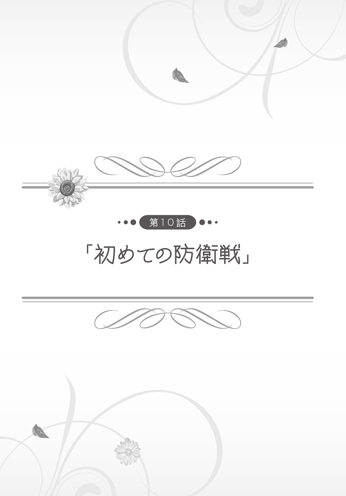
翌朝。
俺は上の階で起こった爆発音により目を覚ますことになる。
「な、なんだ!?」
とにかく凄まじい音であった。
まるで地上で火山が噴火したかと錯覚してしまうような規模である。
「......分かりません。とにかく様子を見に行ってみます！」
あまりに唐突な出来事だったのでリアも混乱しているようであった。
ベッドから飛び起きて上の階に上がってみる。
「見つけたぞ！ リアァ......！！！」
うおっ。名前はたしか......サイバネといっただろうか。
そこにいたのは以前に王都のバザーで会った侯爵のオッサンであった。
「フハハハハ！ 素晴らしい！ 全身に力が溢れてくるぞ！」
えーっと。
ジムに行って筋力トレーニングでも始めたのだろうか？
前に見たときはブクブクに太っていたはずのオッサンは、少し見ない間にボディビルダーのようにムキムキの体になっていた。
さらにサイバネの部下と思われるオッサンたちも、次から次へと現れる。
「カズミ！ 何があった!?」
先程までオッサンたちと戦っていたからだろう。
俺の近くに来たカズミはトレードマークである和服をボロボロにしていた。
「侵入者です。この者たちは地上にいるライムさまたちの防壁を突破。現在、こうして第一階層にまで侵攻中です」
「............!?」
なんてこった。
外見は幼女だが、ライムは相当強いはずである。
こうも簡単に侵入を許してしまうものなのか!?
もしかしたら......オッサンたちがムキムキになっていることが関係しているのだろうか。
何故だろう。
突如としてビルドアップした侯爵のオッサンは以前に戦った猫耳の獣人――デクスの姿と被って見えた。
「ライムは無事なのか？」
「ライムさまでしたら現在も地上で侵入者たちと戦闘中です。敵の数が多かった故に侵入を許してしまいましたが、実力では負けておりません。おそらくですが近いうちにこちらに合流できるのではないかと思われます」
「そうか」
それを聞いて安心した。
ひとまずは目の前の相手に集中しよう。
見たところ第一階層に侵入してきた男たちの数は優に五〇を越えていた。
気になるのが、他の男たちもオッサンたちと同様にムキムキになっているということである。
「主さま。この階層にいる敵は私とカズミで引き受けます。主さまは第二階層に向かいフタバと合流して下さい」
「......二人だけで大丈夫なのか？」
「問題ありません。この程度の相手なら......火炎連弾！」
呪文を唱えた次の瞬間。
リアの掌からは無数の火炎玉が飛んでいく。
「「「グハッ！」」」
会心の一撃。
火炎連弾を受けたサイバネの部下たちは、ボーリングのピンのように吹き飛んでいく。
スゲー！
こういうと失礼だが、リアの火炎連弾が相手にダメージを与えているところを初めて見た気がするよ。
いつもパッとしなかったのは単純に相手が悪かったからなんだろうな。
そんなことを考えていた直後であった。
チクリと脇腹に何かが刺さるような痛みを感じた。
「......ようやく見つけた」
声のした方に目を向ける。
と、そこにいたのは俺の腹に剣を刺しながら微笑む吸血鬼の美少女――カノンであった。
「主さま！」
脇腹に刃物を突き立てられた俺のダメージを心配したのだろう。
同じ階にいたリアは悲鳴にも近い声を上げる。
「大丈夫だ。傷は浅いみたいだから」
実を言うとあまり大丈夫ではない。
傷が浅いというのは事実なのだが、本当はもの凄く痛い。
けれども。
それを言ったところで余計な心配を与えてしまうだけだろう。
だから俺は出来るだけ力の籠った声でリアに対して無事をアピールした。
「これは驚きましたね。その魔剣の名前は血雨。『どんな物体も斬り裂く』というのがウリのレガリアだったのですが......。やはり人族の力は興味深い」
アジトの中に男の声が鳴り響く。
気が付くと俺の目の前に仮面を被った不気味な男が立っていた。
「お前は......？」
「私の名前はグレイス。しがない魔族ですよ」
何故だろう。
グレイスと名乗る魔族からは形容しがたい邪悪な気配を感じた。
「......デクスに聖遺物を与えたのもお前の仕業か？」
これについて俺はある種の確信めいた予感を抱いていた。
今回の騒動の原因は間違いなくこの男の手引きによるものだろう。
この魔族は間違いなく俺の......人族の力を狙っている。
ならば前回の事件の引き金を引いたのも目の前の男である可能性が高いのではないだろうか。
「ご名答。我々の作る聖遺物は貴方のものと違って色々と不完全でして。彼には実験台になってもらうことにしたのですよ」
「............」
他人の命をムシケラのように扱う男の発言にカチンときた。
俺が魔族の男に攻撃を仕掛けようとした直後。
「......貴方の相手は私」
ブウォン、と。
銀髪少女の振るった剣が俺の首筋を掠める。
危ねぇっ！ あと数センチでもズレていたら俺の頸動脈が切断されるところだったぞ!?
「カノン。殺してはダメですよ」
「ん。分かっている。......次は外さない」
カノンの攻撃は続く。
もしかしたらこの子も......あの魔族から不完全な聖遺物を与えられているのだろうか？
攻撃は大雑把というか精彩に欠ける感じだが、以前に会ったときよりもカノンのスピードは格段にアップしているようであった。
まずい状況だな。
身体強化魔術を使用した全力のパンチならばカノンの行動を止めることが出来るだろう。
けれども。
人間パワーを完全にコントロールできていない俺が手を出せば絶対に彼女を殺してしまうことになるだろう。
「おい！ カノン！ まさかお前......あの魔族から妙なものを受け取ったんじゃないだろうな？」
「だから何？」
「聞いていなかったのかよ！ あいつの作る聖遺物は不完全だって！ お前はあの男の実験台にされているかもしれないんだぞ!?」
俺は魔族の作った聖遺物を取り込んだ者の末路を知っていた。
悪質な中毒を発症したデクスは、廃人状態になって今も王都の牢獄の中に繫がれている。
「関係ない。あの薬のおかげで私は強くなった」
よくよく見るとカノンの両目の瞳孔は開いて、虚ろなものになっていた。
「だから私はもう一度あの薬をもらうために......貴方を倒さないといけない」
どうやらこちらの言葉を聞いてくれる気はないらしい。
剣を振り回しながらブツブツと何事か呟くカノンは自分の世界の中に閉じこもっているかのようであった。
「主さま！ 彼女に何か語りかけたところで無駄です。その者は既に......完全に聖遺物の闇に取り込まれていますから」
怒濤の勢いで迫りくるサイバネの部下たちを押さえながらリアが言う。
クソッ。
今日ばかりはリアの言葉を信じたくない！
こんなことを言うと『甘い』と怒られそうだが、俺にはカノンが悪いやつにはどうしても見えないんだよな。
俺はキャンディを受け取った時のカノンの笑顔を思い起こす。
あんな風に笑えるやつが進んで他人を殺したりするはずがない。
きっと何か事情があるのだろう。
......。
............。
ん。そうか！
カノンを正気に戻してやれるかもしれない方法が一つだけあったぞ。
恐る恐るポケットの中を確認してみる。
あった。
まるで今までの事態が全て運命付けられていたかのように――透明の包装に包まれたものが一つだけ残っていた。
「カノン！ こいつをやるから正気に戻ってくれ！」
そこで俺が差し出したのは以前に渡したものと同じ――メロン味のキャンディだった。
「......ふざけているの？」
「グッハァッ！」
で、ですよねー。
カノンの容赦のない一振りが俺の右肩を斬り付ける。
やはり現実はキャンディのように甘くはない。
いかんいかん。
痛みで頭が錯乱して余計なことばかり考えてしまう。
「ククク。何をやっても無駄です。彼女は完全に私のコントロール下にあるのですよ？ さぁ。カノン！ チャンスです！ 止めをさしましょう！」
「......了解」
畜生！
体から血が噴き出していて思考が上手くまとまらない。
カノンの刀を避けている間にも血が流れ出て体力を消耗していくのが分かった。
......。
............。
待てよ。
そうか！ この手があったか！
今度こそ本当にカノンを救ってやれる作戦を見つけられたかもしれない。
「そこっ！」
これで終わりとばかりにカノンが刀を振り下ろす。
けれども、今度はあえてそれを避けようとしなかった。
俺は両手を使ってカノンの振るった刀を受け止める――。
グサリ、と掌の中に刀がめり込んでいくのが分かった。
だがしかし。
カノンの攻撃は俺にとって致命傷にはなり得ない。
何故ならば俺の両掌は現在《身体強化魔法》によって最大限まで強化していたからである。
さぁ。
どうだ。カノン。
これで刀は封じたぞ。
ならば相手の取る行動は一つ。
「キシャッッ―――！」
作戦通り！
刀を封じられたカノンは、鋭い牙を俺の背中に向かって突き立てる。
カノンが『牙』を武器にするってことは吸血鬼という種族の特性から予想することができた。
不完全な聖遺物によって操られているのならば、本物の聖遺物の力で上書きをしてしまえば良い。
この世界の人間は髪の毛の一本にだって強力な魔力が宿っているんだ。
ならば血液だって立派な聖遺物になるだろう。
「何をやっているのですか！ 早くその男に止めをさすのです！」
グレイスの命令を受けたカノンは無言だった。
俺の血液を摂取したカノンの体は眩い光に包まれ、既に浄化が始まっていた。
「ど、どうしたのですか！ 私の言うことを聞けないのであれば次の薬はお預けですよ!?」
「うっ。嫌っ......。私はこの人を傷つけたくない......」
手足を震わせたカノンはついに握りしめていた剣を落としてしまう。
良かった。
正直今回のことは半分賭けだったが、本当に洗脳が解除されたんだな。
「くらええええええええ！」
グレイスと言ったか。
悪いがお前には容赦はしない。
俺は身体強化魔法を最大限にまで発動させると、一瞬でグレイスの前まで移動し、顔を思いっきりブン殴る。
「ふごっ!?」
俺のパンチを受けたグレイスは、そのまま遺跡の壁に激突した。
これまでの怒りが溜まっていたからだろうか？
岩山を粉々にした時以上の手応えがある、我ながら恐ろしいまでの威力だった。
その直後。
パリパリパリッと。
グレイスが身に着けた仮面がひび割れていく。
パキンッという音と共に仮面の中から現れたのは黒髪黒目をした――日本人と呼んでも差支えのないような青年の姿であった。
「これは......まさかそんなはずは......！」
グレイスの素顔を目の当たりにしたリアは驚いているようであった。
「その者の体から漏れ出す魔力は主さまと同じ......人間特有のものです！」
「............!?」
まさか自分と同じ人間に出会う日が来るとは思わなかった。
リアの話によれば、この世界に住んでいた人間たちは一万年前に滅びたはずである。
となるとグレイスという男は俺のように別世界から召喚されたのだろうか？
「フフフフ。素顔を晒すだけではなく......魔力すら感知されてしまうとは......。私としたことがとんだ失態です」
あくまで余裕の表情を崩さずにグレイスはヒビの入った仮面を被り直す。
「流石は人族と言ったところでしょうか。覚えていて下さい。この借りはいつか必ず」
仮面の男は意味深な言葉を残すと、カノンが落とした刀を拾い上げた後にパチンと指を鳴らす。
転移魔法か何かが発動したのだろうか？
仮面の男は俺たちの前から忽然と姿を消すのであった。
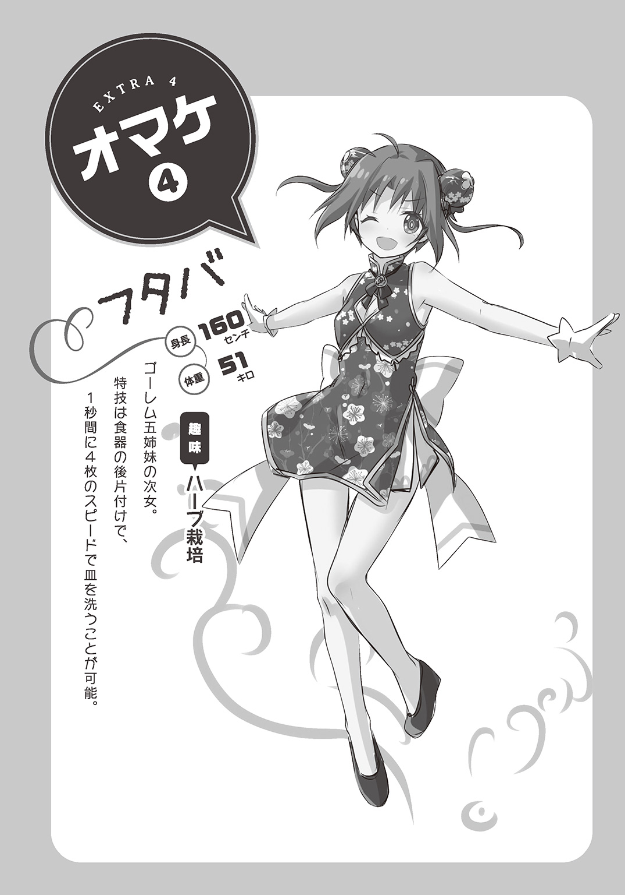
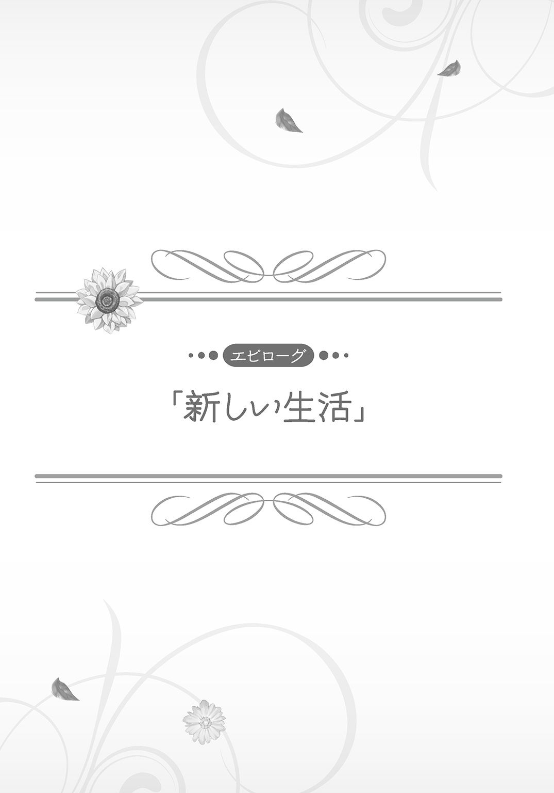
それからのことを話そうと思う。
まず、アジトの中に大挙として押し寄せてきたサイバネの軍勢については縄で縛って、部屋の中に押し込めて、最終的にはロゼの騎士団に身柄を引き取ってもらうことにした。
その際に中毒症状を緩和する薬として、風呂の残り湯を渡しておくことも忘れない。
リアは情報を漏らさないためにもしかるべき処置を取った方が良いという意見をくれたのだが......。
それについては俺の方から反対した。
救える命があるなら救っておきたい。
彼らは魔族に利用されていただけで罪はないからな。
ロゼの方も情報を漏らさないために善処してくれるとは言っていたが、規模が規模だけに難しいと思う。
そろそろ俺の存在を世間に隠すのも限界がきているのかもしれない。
～～～～～～～～
それから。
魔族襲撃事件から何日目かの朝がきた。
目を覚ますと、視界に入ったのは先に起きた二人の美少女であった。
「おはようございます。主さま」
「おはよう。リア」
まず俺の右隣で寝ているのは当然ながらリアである。
このベッドの右隣というポジションは、リアの定位置になりつつあった。
「おはよう。カノン」
「おはよう。ヨージ」
左隣で寝ている少女はカノン。
魔族襲撃の一件以来カノンはウチのアジトで面倒を見ることになっていた。
「主さま。さっそくで悪いのですが......」
「ああ。構わないよ」
「それでは失礼します」
許可を与えるとリアは俺の唇を求めてくる。
同居を始めたカノンに対してライバル意識を燃やしているのだろうか？
ここ最近のリアのキスは今まで以上に情熱的なものがあった。
「ヨージ。早く早く」
「分かった。次はカノンの番だな」
時間が経ったので唇を離すと、リアは目に見えて落ち込んでいるようであった。
だからその......世界が終わったかのような絶望顔は本当に止めろって！
俺はなるべくリアと視線を合わせないようにしながらカノンと口づけを交わす。
カノンの小さな唇はリアのものとは異なる魅力があった。
「......ん。ヨージとのキス。嬉しい」
元々の素質（？）が良かったんだろうな。
驚いたのが、カノンはリア以上にキスをしていられる時間が長いという点である。
最初の頃のリアは二分もキスすると意識が半分飛んでいるような状態だったのに対して――。
カノンは五分を越えてもピンピンとしている。
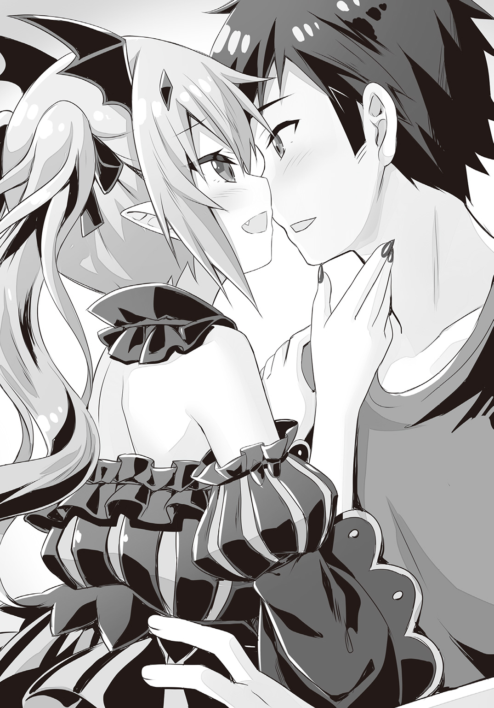
「あの......カノンさん......流石にそろそろ時間なのでは？」
「や。リアは黙っていて」
リアの指摘を受けたにも拘わらずカノンはずっとキスを続けていた。
それだけではない。
唇以外にも全身を使って俺の体を離さない構えを見せていた。
「ヨージは私のペタンコの胸に夢中なの」
「なっ。なななな」
「どう？ ヨージ？ 私のペタンコの胸の感触......気持ち良い？」
「............」
カノンの表情は明らかに得意気である。
ペタンコの胸を強調したポーズを取って勝ち誇っているようであった。
なんというか......コメントに困るな。
そもそもペタンコの胸の感触ってなんだよ!?
この世界では貧乳の方が圧倒的な人気属性だから、カノンの態度は間違ったものではないんだろうけどさ。
「残念ながら......主さまはカノンさんの小さな胸には興味はありません」
「......負け惜しみ？」
「違います！ 主さまは巨乳派なのです！」
リアの反撃。
ライバル意識を燃やしたリアはカノンと同じように胸を強調するポーズを取る。
「ウソ。男の人は小さい胸の方が好き。ヨージはエッチだけど変態ではない」
「主さま！ ハッキリ言って下さい！ 主さまは大きな胸の方が好きなのですよね!?」
なんだろう。
もしかしたら俺は絶対に組み合わせてはいけない二人を引き合わせてしまったのかもしれないな。
巨乳エルフと貧乳吸血鬼。
二人の美少女に囲まれた俺の生活は今まで以上に賑やかなものになりそうだった。
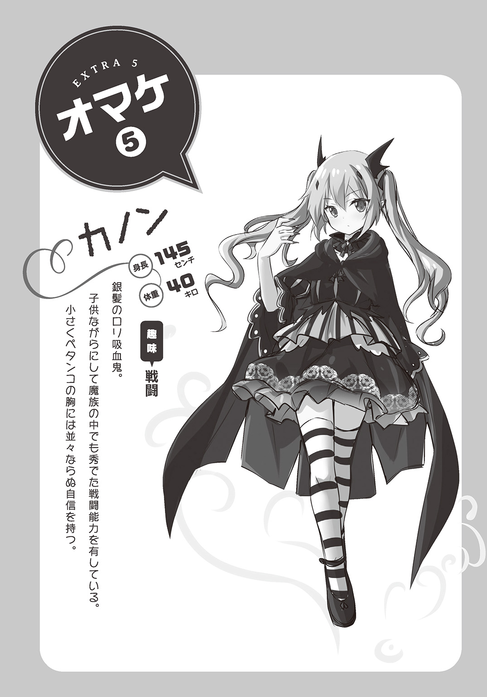
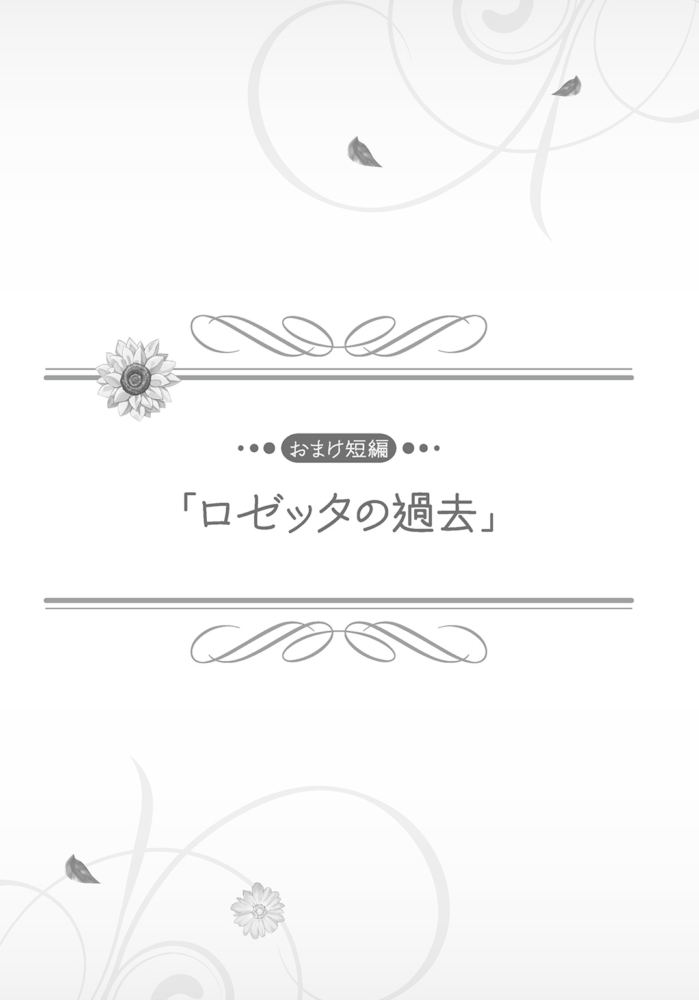
時は葉司が異世界に召喚される五年前ほど前に遡ることになる。
ここは王都ミズガルドの中でも最大の敷地面積を誇るオーヴェルニ家の屋敷である。
屋敷の庭の中には模造刀を構えた幼き日のロゼッタの姿があった。
「不甲斐ない。Ａランク冒険者という肩書はこんなものですの!?」
ロゼッタが手にした剣の先には、死んだように地面に転がる一人の中年男の姿があった。
この男はオーヴェルニ家がロゼッタの剣術指南のために雇った冒険者であり――。
王都の中でも屈指の剣士として名高かった。
「お嬢様！ どうか......どうかその辺りでお止め下さい。既に勝負はついております！」
「分かっています。これ以上、雑魚に付き合うのは時間の無駄ですもの」
手にした剣を鞘に納めるロゼッタ。
冒険者の男を見下す彼女の眼差しはゴミを見るかのようであった。
このロゼッタの態度に業を煮やしたのは冒険者の男である。
「こ、このガキがァァァァァ！ 人が下手に出ていれば良い気になりやがって！」
たしかに自分は一対一での剣の試合では敗れた。
しかし、冒険者としての実力は剣の腕だけで測れるものではない。
剣では負けたが魔法なら――。
男は得意の火属性魔法でロゼッタを驚かせてやろうと考える。
「火炎弾！」
そこで男が使用したのは火属性中級魔法の火炎弾である。
火属性初級魔法の火炎玉の強化版とも呼べるこの技には、その気になれば大木すら燃やし尽くすほどのパワーがあった。
「烈風刃」
「なっ」
だがしかし。
男の火魔法はロゼッタの体に到達する前に強大な風の刃により搔き消されることになる。
「バカなっ！ その歳で上級魔法だと......!?」
そもそもにして。
アーテルフィアにおいて一番簡単な初級魔法ですら扱いこなせるものは、十人に一人とされている。
これが中級魔法ともなれば百人に一人。上級魔法ともなれば千人に一人という割合で希少度は増していく。
まして一二歳という若さで上級魔法を使用するなど異例中の異例だった。
「グバッ......！」
ロゼッタの風魔法を受けた男はそのまま五メートルほど吹っ飛ぶと、地面の上を転がりまわることになる。
「お嬢様。どうかその辺りで。午後からはルイバスター家の子息とお見合いの話がございます」
「......分かっていますわ。本当に無駄な時間を過ごしました」
花嫁修業よりも剣の修行を好み――。
同年代の女性がティータイムを楽しんでいる間に魔術の修練に明け暮れる。
彼女のワガママによって破壊された縁談の数は両手の指では収まりきらない。
狂犬ロゼッタ。
オーヴェルニ家の使用人たちは彼女のことを影でそう呼んでいた。
「......つかぬことをお伺いしますが、お嬢様は男性との恋愛に興味がないのですか？」
「当然でしょう。あのような粗野で乱暴で態度だけは大きい生物に興味があるはずがありません。まぁ、お父様がどうしてもと仰るので先方の話だけは、聞いて差し上げても構わないですが......」
「............」
今日の縁談も絶対に上手くいかないのだろうな。
使用人のメイドが確信した瞬間であった。
～～～～～～～～
それから更に二年の月日が流れた。
この年にロゼッタは両親の強い反対を押し切って、王都の騎士団に入隊することになる。
侯爵の家の、まして女が騎士団に入隊することなど前代未聞のことであり――。
世間の人々は『手の付けられない狂犬を厄介払いしたのでは？』という噂を立てるほどであった。
（ああ。ようやくこれで......わたくしは自由ですわ）
物心付いた時からロゼッタは貴族の子女としての暮らしが嫌いだった。
貴族の女という生物はどんなに表面を綺麗な言葉で誤魔化したところで、所詮は外交の道具でしかない。
剣を握らせるなどもってのほか。
幼い頃から蝶よ花よと育てられ、将来は出来るだけ大きな家の子息に嫁入りすることが名誉とされていた。
ロゼッタはそんな『男たちの都合に合わせなければならない退屈な人生』を壊すために剣を取ることを決意したのである。
「......おい。新入り。ちょっと面を貸せや」
「ふふふ。そんなにわたくしにコテンパンにされたいのですの？」
ここでの生活は良い。
家柄も年齢も関係ない。
騎士団での序列は何よりも――剣の腕がものを言う。
自分の剣で男たちを屈服させるその瞬間は、ロゼッタにとって絶大な快感を与えてくれた。
リアと出会ったのはそんな時であった。
～～～～～～～～
『面倒を見て欲しい部下がいる』
騎士団長のカズールから奇妙な依頼を受けたリアはロゼッタと対談することにした。
なんでもその部下は、貴族の家で育てられたために騎士団での礼儀を知らないらしい。
直接的に制裁を加えようにも本人のずば抜けた剣の才能により返り討ちに――。
間接的に制裁を加えようにも王都屈指の大貴族オーヴェルニ家の後ろ盾に阻まれることになる。
その言動はまさに狂犬。
カズールもロゼッタの存在には頭を抱えていたのであった。
ロゼッタが第六師団の訓練室の扉を開けると目的の人物はそこにいた。
「ふーん。貴女が『鬼将リア』ですか」
髪の毛を短く切りそろえた当時のロゼッタの姿は、『絶世の美男子』と呼んでも違和感のないものであった。
「貴女は今日付けで私の所属する一番隊に所属してもらいます。拒否権はありません」
「話は聞いておりますわ。しかし、生憎とわたくしは自分よりも弱い方の下で働く気はありませんの」
なるほど。
噂通りの跳ねっ返りである。
リアは短く溜息を吐きながら、腰に差した剣を鞘に納めたままロゼッタに対して投げ渡す。
「......これはなんですの？」
「五分だけ時間をあげます。その剣を使って好きなだけ攻撃してきて下さい」
「それでは貴女が使用する武器がないではありませんか!?」
「問題ないでしょう。どちらにせよこちらは剣を使う気はありません。これから指導する後輩に怪我をさせることは出来ませんから」
「............」
リアの発言を受けたロゼッタはピクリと青筋を立てる。
幼少の頃から誰よりも剣才と家庭環境に恵まれたロゼッタにとって、ここまで相手に見下されたのは初めての経験であった。
「ふふふ。随分と余裕があるのですね。エルフ風情がっ！ わたくしに敵うと思いましたか！」
ロゼッタは手にした剣を素早く抜いてリアの元に詰め寄った。
どんなに相手が強くても剣がなければ戦いが成立するはずがない。
勝負の決着は一瞬でつくはずだった――。
「......カハッ」
しかし、二分後。
訓練室の中にはリアの足技を受けて地面に転がるロゼッタの姿があった。
強すぎる。
ロゼッタの目から見てリアの実力は何もかも桁違いのものであった。
「どうしました？ まだ時間はありますが......続けますか？」
「グッ......」
なけなしの気力を振り絞り、立ち上がる。
我武者羅に攻撃を続けるロゼッタであったが、一向にリアの体を捕らえる気配はなかった。
（......どうしてっ!? どうして攻撃が当たりませんの!?）
ロゼッタはそこで自分が井の中の蛙であったことを思い知る。
今回の一件は、ロゼッタが一四年間で築いてきたプライドを粉々に打ち砕くものであった。
「......時間です。ここまでですね」
「............」
ボロボロになったロゼッタには返事をする気力すら残っていなかった。
けれども、何故だろう。
不思議と『悔しい』という感情は湧かなかった。
それどころかロゼッタは、『この人の元でゼロからスタートできる』という状況を好意的に捉えてすらいた。
「......はい。この新人は是非とも我が隊に。私の指揮下の直轄でお願いします。久しぶりに鍛えがいのありそうな新人に出会えました」
薄れゆく意識の中でロゼッタは、最後にそんな会話を聞いたような気がした。
あ と が き
柑橘ゆすらです。
そんな感じで『最強の種族が人間だった件』の二巻でした。
未読の方のために今巻の内容を簡単に説明しておきますと、二巻では一巻と比較してお色気要素が大幅にパワーアップ！
色々な意味でライトノベルの限界に挑戦しています。
新ヒロインのロリ吸血鬼ちゃんの登場によって、葉司を取り巻く環境はますます賑やかになりました。
ちなみに三巻の追加ヒロインはダークエルフさんの予定なので、褐色ヒロイン好きの方は期待していて下さい！
作者は無類のダークエルフ好きですので、夜ノみつきさんのイラストが今から楽しみで仕方がないです。
以下、宣伝タイム。
私、柑橘ゆすらは講談社ラノベ文庫というレーベルから『異世界支配のスキルテイカー』という作品を出版しています。
内容の方は、ごくごく普通の高校生が一〇〇人の奴隷ハーレムを作るために頑張るというストーリーになっています。
なんと！ こちらはコミカライズもスタートしました。
ニコニコ動画『水曜日のシリウス』にて無料で閲覧できます。
興味のある方は、こちらの方も何卒よろしくお願いします。
それでは。
次巻で再び皆様と出会えることを祈りつつ――。
柑橘ゆすら
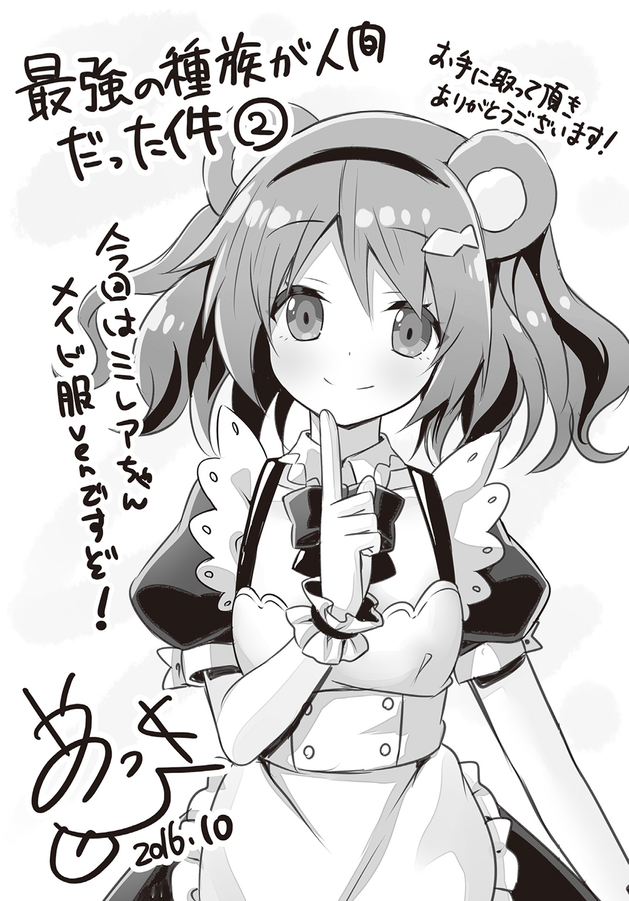
著者紹介
柑橘ゆすら かんきつ ゆすら
講談社ラノベ文庫では『異世界支配のスキルテイカー』というシリーズを書いています。
表紙絵のミレアちゃんの破壊力が凄い！ 実妹・義妹もいいけど、知り合いの妹、というポジションも魅力的に感じています......！
illustration
夜ノみつき やの みつき
北海道在住、Ｂ型のおとめ座。獣耳と銀髪が大好き。
最近はペットを飼おうか割とガチで悩んでいます。癒されたい。
ダッシュエックス文庫DIGITAL
最強の種族が人間だった件２
熊耳少女に迫られています
著者 柑橘ゆすら
© YUSURA KANKITSU 2016
２０１６年11月30日発行
この電子書籍は、ダッシュエックス文庫「最強の種族が人間だった件２ 熊耳少女に迫られています」
２０１６年10月30日発行の第１刷を底本としています。
発行者 鈴木晴彦
発行所 株式会社 集英社
〒１０１－８０５０
東京都千代田区一ツ橋２丁目５番10号
０３－３２３０－６０８０（読者係）
制作所 株式会社ＩＣＥ
本作品の全部また一部を無断で複製、転載、改竄、インターネット上に掲載すること、および有償無償に関わらず、本データを第三者に譲渡することを禁じます。なお個人利用の目的であっても、コピーガードを解除しての複製は、法律で禁じられています。